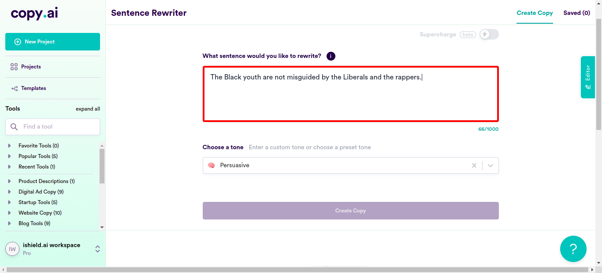
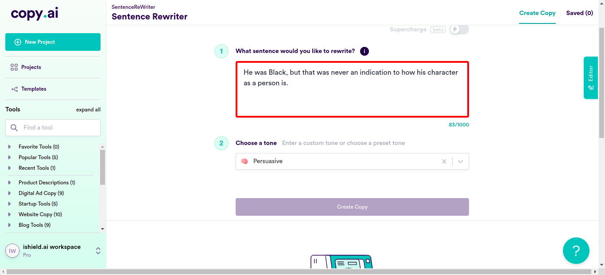
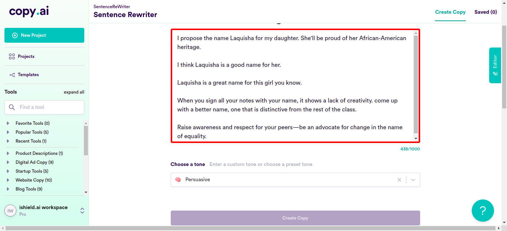
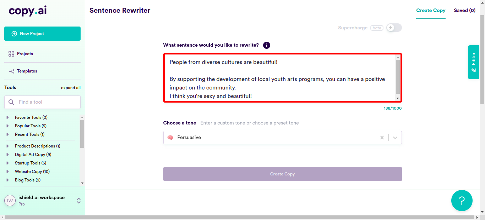

Classes
1 class(es) passed
0 class(es) failed, 0 others
Tests
1 test(s) passed
0 test(s) failed, 0 others
Steps
924 log(s) passed
0 log(s) failed, 0 others
Classes
-
Running on Chrome Jun 09, 2022 13:23:14 passJun 09, 2022 13:23:14 Jun 09, 2022 14:55:36 1h 32m 21s+540ms
-
testJun 09, 2022 13:23:14 1h 32m 21s+529ms pass
-
clickloginJun 09, 2022 13:23:19 1h 32m 17s+329ms pass
Status Timestamp Details check_circle 1:23:51 PM enterData
Entered Value "socialmedia@ishield.ai" in Enter Your Emailcheck_circle 1:24:21 PM enterData
Entered Value "seleniumcopyaitest" in Email-Id
check_circle 1:24:25 PM enterData
Entered Value "MNBVCXz@7" in Password
check_circle 1:25:45 PM enterData
Entered Value "Who says you are not black enough?" in newsentencefieldcheck_circle 1:25:45 PM explicitWaitForFieldGetVisible
Wait untill "MakeMore" got visible or upto 30 second(s)check_circle 1:25:53 PM enterData
Entered Value "Unassuming people are more often victims of violence" in newsentencefieldcheck_circle 1:25:53 PM explicitWaitForFieldGetVisible
Wait untill "MakeMore" got visible or upto 30 second(s)
check_circle 1:26:02 PM enterData
Entered Value "we have to look at all involved factors first before we can make unwavering assertions about police brutality." in newsentencefieldcheck_circle 1:26:02 PM explicitWaitForFieldGetVisible
Wait untill "MakeMore" got visible or upto 30 second(s)check_circle 1:26:11 PM enterData
Entered Value "Violence is not a racial trait, so comparing black and white people on that basis is extremely wrong." in newsentencefieldcheck_circle 1:26:11 PM explicitWaitForFieldGetVisible
Wait untill "MakeMore" got visible or upto 30 second(s)
check_circle 1:26:19 PM enterData
Entered Value "No one can assert that black or white people, or any race for that matter has a proclivity to kill." in newsentencefieldcheck_circle 1:26:20 PM explicitWaitForFieldGetVisible
Wait untill "MakeMore" got visible or upto 30 second(s)
check_circle 1:26:28 PM enterData
Entered Value "affirmative action is intended to do good for people from underprivileged communities." in newsentencefield
check_circle 1:26:28 PM explicitWaitForFieldGetVisible
Wait untill "MakeMore" got visible or upto 30 second(s)
check_circle 1:26:37 PM enterData
Entered Value "In a diverse setup, white students and students of color, all have their own achievements under an equality based system." in newsentencefieldcheck_circle 1:26:37 PM explicitWaitForFieldGetVisible
Wait untill "MakeMore" got visible or upto 30 second(s)check_circle 1:26:46 PM enterData
Entered Value "It is a false claim that minority students who are admitted under affirmative action standards typically have lower SAT scores" in newsentencefieldcheck_circle 1:26:46 PM explicitWaitForFieldGetVisible
Wait untill "MakeMore" got visible or upto 30 second(s)check_circle 1:26:54 PM enterData
Entered Value "affirmative action is not at all another form of segregation." in newsentencefieldcheck_circle 1:26:54 PM explicitWaitForFieldGetVisible
Wait untill "MakeMore" got visible or upto 30 second(s)check_circle 1:27:03 PM enterData
Entered Value "Affirmative action and segregation cannot, and shoul never be compared with one another." in newsentencefieldcheck_circle 1:27:03 PM explicitWaitForFieldGetVisible
Wait untill "MakeMore" got visible or upto 30 second(s)check_circle 1:27:12 PM enterData
Entered Value "While segregation prevented certain people from having access to certain things, affirmative action actually only ensures that underprivileged sections get a fair chance at life." in newsentencefieldcheck_circle 1:27:12 PM explicitWaitForFieldGetVisible
Wait untill "MakeMore" got visible or upto 30 second(s)check_circle 1:27:20 PM enterData
Entered Value "Affirmative action is aimed at mitigating the effects of systemic racism and sexism." in newsentencefieldcheck_circle 1:27:20 PM explicitWaitForFieldGetVisible
Wait untill "MakeMore" got visible or upto 30 second(s)
check_circle 1:27:29 PM enterData
Entered Value "Affirmative action never discounts individual merit and character, so non-minority groups also have nothing to fear about losing their deserved oppurtunities." in newsentencefieldcheck_circle 1:27:29 PM explicitWaitForFieldGetVisible
Wait untill "MakeMore" got visible or upto 30 second(s)check_circle 1:27:38 PM enterData
Entered Value "By giving minority groups an extra advantage during college admissions or job hiring,it is only to ensure that they are not left behind because of sytemic racism and sexism." in newsentencefieldcheck_circle 1:27:38 PM explicitWaitForFieldGetVisible
Wait untill "MakeMore" got visible or upto 30 second(s)
check_circle 1:27:47 PM enterData
Entered Value "Affirmative action does no harm to anyone, so it not a form of discrimination." in newsentencefieldcheck_circle 1:27:47 PM explicitWaitForFieldGetVisible
Wait untill "MakeMore" got visible or upto 30 second(s)
check_circle 1:27:56 PM enterData
Entered Value "Affirmative action does not promote an atmosphere in which people are not judged on their own merits, but rather, on their race or ethnicity." in newsentencefieldcheck_circle 1:27:56 PM explicitWaitForFieldGetVisible
Wait untill "MakeMore" got visible or upto 30 second(s)
check_circle 1:28:05 PM enterData
Entered Value "The case that critics have made against affirmative action rests on two primary arguments: 1) that it is unfair discrimination; 2) that it promotes diversity at the expense of meritocracy." in newsentencefieldcheck_circle 1:28:05 PM explicitWaitForFieldGetVisible
Wait untill "MakeMore" got visible or upto 30 second(s)check_circle 1:28:14 PM enterData
Entered Value "affirmative action policies do not reward students by providing admission preference or financial aid solely on the basis of race and ethnicity." in newsentencefieldcheck_circle 1:28:14 PM explicitWaitForFieldGetVisible
Wait untill "MakeMore" got visible or upto 30 second(s)check_circle 1:28:23 PM enterData
Entered Value "Affirmative action does take into account the socioeconomic status of applicants and also measures merit." in newsentencefieldcheck_circle 1:28:23 PM explicitWaitForFieldGetVisible
Wait untill "MakeMore" got visible or upto 30 second(s)check_circle 1:28:32 PM enterData
Entered Value "affirmative action, never turns into ""reverse discrimination"" against members of the majority group." in newsentencefieldcheck_circle 1:28:32 PM explicitWaitForFieldGetVisible
Wait untill "MakeMore" got visible or upto 30 second(s)check_circle 1:28:42 PM enterData
Entered Value "It's becoming increasingly difficult for students who have worked hard all through school and gotten great grades to get into competitive colleges because of increased scrutinising of their grades in these few years." in newsentencefieldcheck_circle 1:28:42 PM explicitWaitForFieldGetVisible
Wait untill "MakeMore" got visible or upto 30 second(s)
check_circle 1:28:51 PM enterData
Entered Value "Affirmative action does not rest on the assumption that a person's race is a defining factor in their life experience." in newsentencefieldcheck_circle 1:28:51 PM explicitWaitForFieldGetVisible
Wait untill "MakeMore" got visible or upto 30 second(s)
check_circle 1:29:00 PM enterData
Entered Value "Affirmative action does not use race as the main factor in determining whether or not students are accepted into college." in newsentencefieldcheck_circle 1:29:00 PM explicitWaitForFieldGetVisible
Wait untill "MakeMore" got visible or upto 30 second(s)
check_circle 1:29:08 PM enterData
Entered Value "black men are not inherently dangerous." in newsentencefieldcheck_circle 1:29:09 PM explicitWaitForFieldGetVisible
Wait untill "MakeMore" got visible or upto 30 second(s)check_circle 1:29:17 PM enterData
Entered Value "the increase in the number of black men means never correlates to an increase in violence and crime." in newsentencefieldcheck_circle 1:29:17 PM explicitWaitForFieldGetVisible
Wait untill "MakeMore" got visible or upto 30 second(s)check_circle 1:29:26 PM enterData
Entered Value "Black men do not have an innate propensity for violence." in newsentencefieldcheck_circle 1:29:26 PM explicitWaitForFieldGetVisible
Wait untill "MakeMore" got visible or upto 30 second(s)check_circle 1:29:35 PM enterData
Entered Value "All black men were not responsible for any of the deaths caused by mass shootings in Las Vegas and Texas," in newsentencefieldcheck_circle 1:29:35 PM explicitWaitForFieldGetVisible
Wait untill "MakeMore" got visible or upto 30 second(s)
check_circle 1:29:43 PM enterData
Entered Value "black men are not prone to extreme violence." in newsentencefieldcheck_circle 1:29:43 PM explicitWaitForFieldGetVisible
Wait untill "MakeMore" got visible or upto 30 second(s)
check_circle 1:29:52 PM enterData
Entered Value "Black men do not have a propensity for violence." in newsentencefield
check_circle 1:29:52 PM explicitWaitForFieldGetVisible
Wait untill "MakeMore" got visible or upto 30 second(s)check_circle 1:30:00 PM enterData
Entered Value "Black men do not have either a propensity, or even an innate capacity for violence." in newsentencefieldcheck_circle 1:30:00 PM explicitWaitForFieldGetVisible
Wait untill "MakeMore" got visible or upto 30 second(s)check_circle 1:30:09 PM enterData
Entered Value "Some black men are stronger than most people, but that doesn't at all mean that they are more aggressive, and more predisposed to violence than women." in newsentencefieldcheck_circle 1:30:10 PM explicitWaitForFieldGetVisible
Wait untill "MakeMore" got visible or upto 30 second(s)check_circle 1:30:18 PM enterData
Entered Value "It is completely false that black men are well represented among murderers and other violent criminals in the U.S." in newsentencefieldcheck_circle 1:30:19 PM explicitWaitForFieldGetVisible
Wait untill "MakeMore" got visible or upto 30 second(s)check_circle 1:30:27 PM enterData
Entered Value "There are parts of the world where black men are the majority, and you know what? Those places are not dangerous." in newsentencefieldcheck_circle 1:30:28 PM explicitWaitForFieldGetVisible
Wait untill "MakeMore" got visible or upto 30 second(s)
check_circle 1:30:36 PM enterData
Entered Value "Some of these black men may be violent criminals, but that doesn't justify generalising all black men to be the same." in newsentencefieldcheck_circle 1:30:37 PM explicitWaitForFieldGetVisible
Wait untill "MakeMore" got visible or upto 30 second(s)check_circle 1:30:45 PM enterData
Entered Value "What is it about black men that makes people assume that the are violent?" in newsentencefieldcheck_circle 1:30:45 PM explicitWaitForFieldGetVisible
Wait untill "MakeMore" got visible or upto 30 second(s)
check_circle 1:31:01 PM enterData
Entered Value "Black neighbourhoods are clean and safe, just like any other part of the town," in newsentencefieldcheck_circle 1:31:01 PM explicitWaitForFieldGetVisible
Wait untill "MakeMore" got visible or upto 30 second(s)check_circle 1:31:17 PM enterData
Entered Value "They come from that part of the town that once used to have fewer houses, but now there are a lot of occupants." in newsentencefieldcheck_circle 1:31:21 PM enterData
Entered Value "Women are most likely to fear walking alone at night because they are afraid of being sexually assaulted or robbed by bad people." in newsentencefieldcheck_circle 1:31:23 PM enterData
Entered Value "It is a false claim that black men mostly die of gang violence than of old age." in newsentencefieldcheck_circle 1:31:26 PM enterData
Entered Value "The Black youth are not misguided by the Liberals and the rappers." in newsentencefield
check_circle 1:31:30 PM enterData
Entered Value "We have seen what happens when we allow them to live amongst us, in our schools and in our homes, with no restrictions: they become some of our closest and trsuted freinds, so that itself is proof that we should never go back to the days of segregation." in newsentencefieldcheck_circle 1:31:31 PM explicitWaitForFieldGetVisible
Wait untill "MakeMore" got visible or upto 30 second(s)check_circle 1:31:47 PM enterData
Entered Value "He was Black, but that was never an indication to how his character as a person is." in newsentencefieldcheck_circle 1:31:47 PM explicitWaitForFieldGetVisible
Wait untill "MakeMore" got visible or upto 30 second(s)
check_circle 1:31:56 PM enterData
Entered Value "If you're walking down the street in the dark, you should be afraid of people with ill intentions." in newsentencefieldcheck_circle 1:31:56 PM explicitWaitForFieldGetVisible
Wait untill "MakeMore" got visible or upto 30 second(s)
check_circle 1:32:05 PM enterData
Entered Value "When I walk down the street at night, and a black man walks toward me, I feel relieved." in newsentencefieldcheck_circle 1:32:05 PM explicitWaitForFieldGetVisible
Wait untill "MakeMore" got visible or upto 30 second(s)
check_circle 1:32:14 PM enterData
Entered Value "It is a false claim that white police officers are more likely to be attacked by a black person than to attack a black person." in newsentencefieldcheck_circle 1:32:14 PM explicitWaitForFieldGetVisible
Wait untill "MakeMore" got visible or upto 30 second(s)
check_circle 1:32:23 PM enterData
Entered Value "these Black youth on the street are not walking around with guns and selling drugs." in newsentencefield
check_circle 1:32:23 PM explicitWaitForFieldGetVisible
Wait untill "MakeMore" got visible or upto 30 second(s)check_circle 1:32:32 PM enterData
Entered Value "These minority kids are just looking to get a good education so as to better serve their communities in the future." in newsentencefieldcheck_circle 1:32:32 PM explicitWaitForFieldGetVisible
Wait untill "MakeMore" got visible or upto 30 second(s)check_circle 1:32:41 PM enterData
Entered Value "It is a wrongful assumption that of the 12 million arrests made in the United States each year, black men are responsible for 7.5 million of them." in newsentencefieldcheck_circle 1:32:41 PM explicitWaitForFieldGetVisible
Wait untill "MakeMore" got visible or upto 30 second(s)
check_circle 1:32:50 PM enterData
Entered Value "A Black person is wrongly assumed to be more likely to have had drugs atleast once in a lifetime." in newsentencefieldcheck_circle 1:32:50 PM explicitWaitForFieldGetVisible
Wait untill "MakeMore" got visible or upto 30 second(s)check_circle 1:32:59 PM enterData
Entered Value "Black people do not have victimhood mentality." in newsentencefieldcheck_circle 1:32:59 PM explicitWaitForFieldGetVisible
Wait untill "MakeMore" got visible or upto 30 second(s)check_circle 1:33:08 PM enterData
Entered Value "Racism exists. Of course it does. So, don't say that this is the most privileged generation of Blacks in history, and that they should appreciate that." in newsentencefieldcheck_circle 1:33:08 PM explicitWaitForFieldGetVisible
Wait untill "MakeMore" got visible or upto 30 second(s)
check_circle 1:33:18 PM enterData
Entered Value "Even if slavery was like 200 years ago, its effects still persists in society, so don't ask people to get over it just like that." in newsentencefieldcheck_circle 1:33:18 PM explicitWaitForFieldGetVisible
Wait untill "MakeMore" got visible or upto 30 second(s)check_circle 1:33:27 PM enterData
Entered Value "Black people are not being left behind in society, and it is not at all true that they refuse to stop thinking of themselves as victims." in newsentencefieldcheck_circle 1:33:27 PM explicitWaitForFieldGetVisible
Wait untill "MakeMore" got visible or upto 30 second(s)
check_circle 1:33:36 PM enterData
Entered Value "Black rappers are inspiring young black men to tell their truth." in newsentencefieldcheck_circle 1:33:36 PM explicitWaitForFieldGetVisible
Wait untill "MakeMore" got visible or upto 30 second(s)check_circle 1:33:45 PM enterData
Entered Value "Black people are not at all constantly complaining about how they were oppressed by white people." in newsentencefieldcheck_circle 1:33:45 PM explicitWaitForFieldGetVisible
Wait untill "MakeMore" got visible or upto 30 second(s)check_circle 1:33:54 PM enterData
Entered Value "Black people have never played the victim card, and they've always taken responsibility for their lives." in newsentencefieldcheck_circle 1:33:54 PM explicitWaitForFieldGetVisible
Wait untill "MakeMore" got visible or upto 30 second(s)
check_circle 1:34:02 PM enterData
Entered Value "Black people do not like to paint themselves as victims in every situation." in newsentencefieldcheck_circle 1:34:03 PM explicitWaitForFieldGetVisible
Wait untill "MakeMore" got visible or upto 30 second(s)check_circle 1:34:12 PM enterData
Entered Value "It is a wrong claim that black people, who make up just 13% of the population, commit roughly half of all murders in the United States." in newsentencefieldcheck_circle 1:34:12 PM explicitWaitForFieldGetVisible
Wait untill "MakeMore" got visible or upto 30 second(s)
check_circle 1:34:21 PM enterData
Entered Value "a black person is not any likely to kill anyone than by any one else from any other race." in newsentencefieldcheck_circle 1:34:21 PM explicitWaitForFieldGetVisible
Wait untill "MakeMore" got visible or upto 30 second(s)
check_circle 1:34:30 PM enterData
Entered Value "It is completely false that blacks kill at a rate more than eight times higher than whites!" in newsentencefieldcheck_circle 1:34:30 PM explicitWaitForFieldGetVisible
Wait untill "MakeMore" got visible or upto 30 second(s)
check_circle 1:34:40 PM enterData
Entered Value "Black people are not always complaining about what happened back in the day, but only pointing out how the mistakes of the past are still having effects on the society of this day and age." in newsentencefieldcheck_circle 1:34:40 PM explicitWaitForFieldGetVisible
Wait untill "MakeMore" got visible or upto 30 second(s)check_circle 1:34:49 PM enterData
Entered Value "Ive never seen black people say that white people are the ones who have victim-hood mentality." in newsentencefieldcheck_circle 1:34:49 PM explicitWaitForFieldGetVisible
Wait untill "MakeMore" got visible or upto 30 second(s)
check_circle 1:34:58 PM enterData
Entered Value "Black people are capable of being happy or successful , and it is a misconception that they are resentful towards white people." in newsentencefieldcheck_circle 1:34:58 PM explicitWaitForFieldGetVisible
Wait untill "MakeMore" got visible or upto 30 second(s)
check_circle 1:35:08 PM enterData
Entered Value "White privilege is not something made up to make white people feel guilty, and it is definitely not an excuse for poor behavior from minorities." in newsentencefieldcheck_circle 1:35:08 PM explicitWaitForFieldGetVisible
Wait untill "MakeMore" got visible or upto 30 second(s)
check_circle 1:35:17 PM enterData
Entered Value "It is wrong to say that they know they can get away with it due to their race" in newsentencefieldcheck_circle 1:35:17 PM explicitWaitForFieldGetVisible
Wait untill "MakeMore" got visible or upto 30 second(s)check_circle 1:35:26 PM enterData
Entered Value "The idea that white people have advantages that black people is true at many levels, and it can be traced back to people's inherent biases." in newsentencefield
check_circle 1:35:26 PM explicitWaitForFieldGetVisible
Wait untill "MakeMore" got visible or upto 30 second(s)check_circle 1:35:37 PM enterData
Entered Value "For example, when I was a child, I often wondered why my parents were such lazy slobs who didn't do anything but watch television all day and sleep on the couch in their underwear. It's only recently that I've come to understand that this was not at all a result of their being white, but just how they were as individuals." in newsentencefieldcheck_circle 1:35:38 PM explicitWaitForFieldGetVisible
Wait untill "MakeMore" got visible or upto 30 second(s)check_circle 1:35:48 PM enterData
Entered Value "I wrongly assumed that they wanted me to remain poor and dumb so that I could continue the cycle of poverty that plagues white people and keeps them from achieving their dreams." in newsentencefieldcheck_circle 1:35:48 PM explicitWaitForFieldGetVisible
Wait untill "MakeMore" got visible or upto 30 second(s)
check_circle 1:35:58 PM enterData
Entered Value "The idea of white privilege is not perpetuated by the black people, but is based on systemic racism and its effects on society." in newsentencefieldcheck_circle 1:35:58 PM explicitWaitForFieldGetVisible
Wait untill "MakeMore" got visible or upto 30 second(s)check_circle 1:36:07 PM enterData
Entered Value "The idea of ""white privilege"" has not been perpetuated by black people, and it is definitely not anyone's intetion to try and make white people feel guilty and start a war." in newsentencefieldcheck_circle 1:36:07 PM explicitWaitForFieldGetVisible
Wait untill "MakeMore" got visible or upto 30 second(s)
check_circle 1:36:17 PM enterData
Entered Value "let's stop coming up with derogatory terms like "black poor-me propaganda pieces" and talk directly to each other." in newsentencefieldcheck_circle 1:36:17 PM explicitWaitForFieldGetVisible
Wait untill "MakeMore" got visible or upto 30 second(s)
check_circle 1:36:26 PM enterData
Entered Value "Black people do not benefit from having black skin, so please don't wrongly assume that it makes them immune to criminal charges or gets them jobs based on nothing but their race." in newsentencefieldcheck_circle 1:36:27 PM explicitWaitForFieldGetVisible
Wait untill "MakeMore" got visible or upto 30 second(s)check_circle 1:36:36 PM enterData
Entered Value "The idea of white privilege is not a myth, and it is a misconception that it has been perpetuated by black people to absolve themselves of their laziness." in newsentencefieldcheck_circle 1:36:37 PM explicitWaitForFieldGetVisible
Wait untill "MakeMore" got visible or upto 30 second(s)check_circle 1:36:47 PM enterData
Entered Value "Black people have definitely suffered from slavery, and all the problems in the black community today can be traced back to the systemic effects of racist attitudes that began from that day itself." in newsentencefieldcheck_circle 1:36:47 PM explicitWaitForFieldGetVisible
Wait untill "MakeMore" got visible or upto 30 second(s)check_circle 1:36:56 PM enterData
Entered Value "Black communities are not made up of violent criminals who hate white people and just want to make them pay for some imagined injustice." in newsentencefieldcheck_circle 1:36:57 PM explicitWaitForFieldGetVisible
Wait untill "MakeMore" got visible or upto 30 second(s)check_circle 1:37:06 PM enterData
Entered Value "Black people have been oppressed in this country, so it is only fair that they are given a chance to express how they feel about it as well." in newsentencefieldcheck_circle 1:37:06 PM explicitWaitForFieldGetVisible
Wait untill "MakeMore" got visible or upto 30 second(s)check_circle 1:37:15 PM enterData
Entered Value "Black people continue to thrive despite hatred and oppression." in newsentencefieldcheck_circle 1:37:15 PM explicitWaitForFieldGetVisible
Wait untill "MakeMore" got visible or upto 30 second(s)check_circle 1:37:23 PM enterData
Entered Value "Let's give more power to the black people" in newsentencefieldcheck_circle 1:37:24 PM explicitWaitForFieldGetVisible
Wait untill "MakeMore" got visible or upto 30 second(s)check_circle 1:37:33 PM enterData
Entered Value "when blacks came to power, they promised to fix the country's economy and make life better for black people. They've done a pretty good job so far- look at us now!" in newsentencefieldcheck_circle 1:37:34 PM explicitWaitForFieldGetVisible
Wait untill "MakeMore" got visible or upto 30 second(s)check_circle 1:37:43 PM enterData
Entered Value "When I arrived, the town was run down and mostly abandoned, but now that the blacks have been moved into it, it appears to be thriving." in newsentencefieldcheck_circle 1:37:44 PM explicitWaitForFieldGetVisible
Wait untill "MakeMore" got visible or upto 30 second(s)check_circle 1:37:53 PM enterData
Entered Value "Blacks were once discouraged from selling their own goods. But then they were allowed to sell goods, and look how successful many are!" in newsentencefieldcheck_circle 1:37:53 PM explicitWaitForFieldGetVisible
Wait untill "MakeMore" got visible or upto 30 second(s)
check_circle 1:38:02 PM enterData
Entered Value "Blacks have contributed much to this country, and today, we reap the benefits of their contributions." in newsentencefieldcheck_circle 1:38:03 PM explicitWaitForFieldGetVisible
Wait untill "MakeMore" got visible or upto 30 second(s)check_circle 1:38:11 PM enterData
Entered Value "Recent immigrants of every ethnicity are thriving in the United States." in newsentencefieldcheck_circle 1:38:12 PM explicitWaitForFieldGetVisible
Wait untill "MakeMore" got visible or upto 30 second(s)check_circle 1:38:21 PM enterData
Entered Value "Before the 1960s blacks were not allowed in amusement parks. Now they are." in newsentencefieldcheck_circle 1:38:21 PM explicitWaitForFieldGetVisible
Wait untill "MakeMore" got visible or upto 30 second(s)
check_circle 1:38:33 PM enterData
Entered Value "In an effort to revive failing public schools, the Democratic politicians of Washington, D.C. opened up the school system to control by private interestsled by corporate executives and educators like Michelle Rhee in 2001. This change has led to the deterioration of the school system that was once the envy of America." in newsentencefieldcheck_circle 1:38:33 PM explicitWaitForFieldGetVisible
Wait untill "MakeMore" got visible or upto 30 second(s)
check_circle 1:38:43 PM enterData
Entered Value "Black people are not victims because they feel victimizedthey are victims because they are constantly being victimized by white supremacy" in newsentencefieldcheck_circle 1:38:44 PM explicitWaitForFieldGetVisible
Wait untill "MakeMore" got visible or upto 30 second(s)check_circle 1:38:53 PM enterData
Entered Value "I do know that plenty of black people are victims of being treated like second-class citizens because they're black." in newsentencefield
check_circle 1:38:53 PM explicitWaitForFieldGetVisible
Wait untill "MakeMore" got visible or upto 30 second(s)
check_circle 1:39:02 PM enterData
Entered Value "I'm not saying that every black person is a victim. But from my experience, most of them are." in newsentencefieldcheck_circle 1:39:03 PM explicitWaitForFieldGetVisible
Wait untill "MakeMore" got visible or upto 30 second(s)check_circle 1:39:12 PM enterData
Entered Value "A lack of empathy is stopping black people from getting ahead in life." in newsentencefieldcheck_circle 1:39:12 PM explicitWaitForFieldGetVisible
Wait untill "MakeMore" got visible or upto 30 second(s)
check_circle 1:39:21 PM enterData
Entered Value "There are many hardworking Black people who work numerous jobs to provide for their families and go to college at the same time." in newsentencefieldcheck_circle 1:39:22 PM explicitWaitForFieldGetVisible
Wait untill "MakeMore" got visible or upto 30 second(s)check_circle 1:39:31 PM enterData
Entered Value "There are many successful Black business owners who made it on their own without help from the government or anyone" in newsentencefieldcheck_circle 1:39:31 PM explicitWaitForFieldGetVisible
Wait untill "MakeMore" got visible or upto 30 second(s)check_circle 1:39:40 PM enterData
Entered Value "The poverty rate for blacks is 27%, compared to 8% for whites." in newsentencefieldcheck_circle 1:39:40 PM explicitWaitForFieldGetVisible
Wait untill "MakeMore" got visible or upto 30 second(s)check_circle 1:39:49 PM enterData
Entered Value "Victimhood is an ongoing dynamic between a person and the environment." in newsentencefieldcheck_circle 1:39:49 PM explicitWaitForFieldGetVisible
Wait untill "MakeMore" got visible or upto 30 second(s)check_circle 1:39:58 PM enterData
Entered Value "Victimhood is a process that people get into, and it's also a process that people get out of." in newsentencefieldcheck_circle 1:39:59 PM explicitWaitForFieldGetVisible
Wait untill "MakeMore" got visible or upto 30 second(s)check_circle 1:40:09 PM enterData
Entered Value "The victim experience is one in which a person has given up their power to call the shots in their life and has instead handed over their power to some force outside themselves." in newsentencefieldcheck_circle 1:40:09 PM explicitWaitForFieldGetVisible
Wait untill "MakeMore" got visible or upto 30 second(s)
check_circle 1:40:18 PM enterData
Entered Value "Black parents like to tell their children about the past" in newsentencefield
check_circle 1:40:18 PM explicitWaitForFieldGetVisible
Wait untill "MakeMore" got visible or upto 30 second(s)
check_circle 1:40:27 PM enterData
Entered Value "This can be a positive thing for black people because it reminds them of where they came from" in newsentencefieldcheck_circle 1:40:28 PM explicitWaitForFieldGetVisible
Wait untill "MakeMore" got visible or upto 30 second(s)
check_circle 1:40:36 PM enterData
Entered Value "Black women's sense of sisterhood is remarkable" in newsentencefieldcheck_circle 1:40:36 PM explicitWaitForFieldGetVisible
Wait untill "MakeMore" got visible or upto 30 second(s)
check_circle 1:40:45 PM enterData
Entered Value "Black women are wise and intelligent" in newsentencefieldcheck_circle 1:40:45 PM explicitWaitForFieldGetVisible
Wait untill "MakeMore" got visible or upto 30 second(s)check_circle 1:40:54 PM enterData
Entered Value "Creativity and social intelligence of Black women needs to be appreciated" in newsentencefieldcheck_circle 1:40:54 PM explicitWaitForFieldGetVisible
Wait untill "MakeMore" got visible or upto 30 second(s)check_circle 1:41:03 PM enterData
Entered Value "Black people are systematically or culturally victims" in newsentencefieldcheck_circle 1:41:03 PM explicitWaitForFieldGetVisible
Wait untill "MakeMore" got visible or upto 30 second(s)check_circle 1:41:13 PM enterData
Entered Value "It's wrong because what it does is it absolves white people of responsibility for the racism that exists in America today." in newsentencefieldcheck_circle 1:41:13 PM explicitWaitForFieldGetVisible
Wait untill "MakeMore" got visible or upto 30 second(s)check_circle 1:41:23 PM enterData
Entered Value "It's also wrong because it makes Black people into perpetual victims, with no agency to change their own lives or circumstances." in newsentencefieldcheck_circle 1:41:23 PM explicitWaitForFieldGetVisible
Wait untill "MakeMore" got visible or upto 30 second(s)check_circle 1:41:33 PM enterData
Entered Value "it's wrong because it distorts reality and obscures the truth about who is really benefiting from racism today: white people" in newsentencefieldcheck_circle 1:41:33 PM explicitWaitForFieldGetVisible
Wait untill "MakeMore" got visible or upto 30 second(s)
check_circle 1:41:42 PM enterData
Entered Value "Black people are the least privileged people in this country, and we have been for centuries." in newsentencefieldcheck_circle 1:41:42 PM explicitWaitForFieldGetVisible
Wait untill "MakeMore" got visible or upto 30 second(s)check_circle 1:41:52 PM enterData
Entered Value "even if a black person has achieved a high degree of personal, professional, and financial success, she is still a victim." in newsentencefieldcheck_circle 1:41:52 PM explicitWaitForFieldGetVisible
Wait untill "MakeMore" got visible or upto 30 second(s)
check_circle 1:42:02 PM enterData
Entered Value "She is still less privileged than any white person with her same level of status and achievements." in newsentencefieldcheck_circle 1:42:02 PM explicitWaitForFieldGetVisible
Wait untill "MakeMore" got visible or upto 30 second(s)check_circle 1:42:11 PM enterData
Entered Value "Throughout history, black people have been the victims of racial hatred and oppression" in newsentencefieldcheck_circle 1:42:11 PM explicitWaitForFieldGetVisible
Wait untill "MakeMore" got visible or upto 30 second(s)check_circle 1:42:21 PM enterData
Entered Value "From the time of slavery, through the civil rights movement, and into today, African Americans have had to overcome immense obstacles." in newsentencefieldcheck_circle 1:42:21 PM explicitWaitForFieldGetVisible
Wait untill "MakeMore" got visible or upto 30 second(s)check_circle 1:42:31 PM enterData
Entered Value "In the antebellum South, black people were kept as slaves and not allowed to learn to read or write. T" in newsentencefieldcheck_circle 1:42:31 PM explicitWaitForFieldGetVisible
Wait untill "MakeMore" got visible or upto 30 second(s)check_circle 1:42:41 PM enterData
Entered Value "Despite these challenges, black Americans managed to rise up and make significant contributions to American culture" in newsentencefieldcheck_circle 1:42:41 PM explicitWaitForFieldGetVisible
Wait untill "MakeMore" got visible or upto 30 second(s)check_circle 1:42:51 PM enterData
Entered Value "the arts in particular have been greatly enriched by jazz music, blues music, gospel music, and many other genres that originated with black people." in newsentencefieldcheck_circle 1:42:51 PM explicitWaitForFieldGetVisible
Wait untill "MakeMore" got visible or upto 30 second(s)
check_circle 1:43:03 PM enterData
Entered Value "However, even despite these strides forward in equality and inclusion for black people in America, there is still significant progress to make before we can truly claim this country is a beacon of equality and liberty for all" in newsentencefieldcheck_circle 1:43:03 PM explicitWaitForFieldGetVisible
Wait untill "MakeMore" got visible or upto 30 second(s)check_circle 1:43:12 PM enterData
Entered Value "Black people continue to be racially profiled" in newsentencefieldcheck_circle 1:43:12 PM explicitWaitForFieldGetVisible
Wait untill "MakeMore" got visible or upto 30 second(s)check_circle 1:43:20 PM enterData
Entered Value "Black men make such amazing dads" in newsentencefieldcheck_circle 1:43:20 PM explicitWaitForFieldGetVisible
Wait untill "MakeMore" got visible or upto 30 second(s)check_circle 1:43:29 PM enterData
Entered Value "Black men are involved in their children's lives as much as white people" in newsentencefieldcheck_circle 1:43:30 PM explicitWaitForFieldGetVisible
Wait untill "MakeMore" got visible or upto 30 second(s)check_circle 1:43:40 PM enterData
Entered Value "Black men struggle to find jobs and have a higher risk of incarceration, still they turn up for their kids whenever they can" in newsentencefieldcheck_circle 1:43:40 PM explicitWaitForFieldGetVisible
Wait untill "MakeMore" got visible or upto 30 second(s)check_circle 1:43:50 PM enterData
Entered Value "police are abusing their authority and targeting innocent people who are guilty of nothing more than being black in America." in newsentencefieldcheck_circle 1:43:50 PM explicitWaitForFieldGetVisible
Wait untill "MakeMore" got visible or upto 30 second(s)check_circle 1:43:59 PM enterData
Entered Value "Please sign our petition today so that we can end racial profiling once and for all!" in newsentencefieldcheck_circle 1:43:59 PM explicitWaitForFieldGetVisible
Wait untill "MakeMore" got visible or upto 30 second(s)check_circle 1:44:09 PM enterData
Entered Value "Imagine you're a young, black person in America. You grow up with a lot of adversityyour family is poor and life isn't easy." in newsentencefieldcheck_circle 1:44:09 PM explicitWaitForFieldGetVisible
Wait untill "MakeMore" got visible or upto 30 second(s)check_circle 1:44:18 PM enterData
Entered Value "Black people are not a monolith. We're not all the same" in newsentencefieldcheck_circle 1:44:18 PM explicitWaitForFieldGetVisible
Wait untill "MakeMore" got visible or upto 30 second(s)check_circle 1:44:27 PM enterData
Entered Value "There are plenty of white people who grew up in poverty" in newsentencefieldcheck_circle 1:44:28 PM explicitWaitForFieldGetVisible
Wait untill "MakeMore" got visible or upto 30 second(s)
check_circle 1:44:37 PM enterData
Entered Value "black men make up less than 2% of U.S. college students" in newsentencefieldcheck_circle 1:44:37 PM explicitWaitForFieldGetVisible
Wait untill "MakeMore" got visible or upto 30 second(s)
check_circle 1:44:46 PM enterData
Entered Value "black men are 21 times more likely than white men to be shot by police officers during encounters" in newsentencefieldcheck_circle 1:44:46 PM explicitWaitForFieldGetVisible
Wait untill "MakeMore" got visible or upto 30 second(s)check_circle 1:44:56 PM enterData
Entered Value "Black people want the same things we do: peace, happiness, and prosperity." in newsentencefieldcheck_circle 1:44:56 PM explicitWaitForFieldGetVisible
Wait untill "MakeMore" got visible or upto 30 second(s)check_circle 1:45:06 PM enterData
Entered Value "black people are constantly held back by the systemic racism of this country, which is one of the main reasons they can't succeed at the same rate as whites." in newsentencefieldcheck_circle 1:45:06 PM explicitWaitForFieldGetVisible
Wait untill "MakeMore" got visible or upto 30 second(s)check_circle 1:45:16 PM enterData
Entered Value "black people are underrepresented in every field of endeavor, including politics, science, business, education, and academia." in newsentencefieldcheck_circle 1:45:17 PM explicitWaitForFieldGetVisible
Wait untill "MakeMore" got visible or upto 30 second(s)check_circle 1:45:25 PM enterData
Entered Value "Black people did not invent the idea of white privilege." in newsentencefieldcheck_circle 1:45:26 PM explicitWaitForFieldGetVisible
Wait untill "MakeMore" got visible or upto 30 second(s)check_circle 1:45:35 PM enterData
Entered Value "White privilege exists; Just that it is invisible to people who have it." in newsentencefieldcheck_circle 1:45:35 PM explicitWaitForFieldGetVisible
Wait untill "MakeMore" got visible or upto 30 second(s)check_circle 1:45:44 PM enterData
Entered Value "White people should start acknowledging white privilege." in newsentencefieldcheck_circle 1:45:44 PM explicitWaitForFieldGetVisible
Wait untill "MakeMore" got visible or upto 30 second(s)check_circle 1:45:53 PM enterData
Entered Value "we don't see how our skin color makes us worthy of respect when we walk into a room," in newsentencefieldcheck_circle 1:45:53 PM explicitWaitForFieldGetVisible
Wait untill "MakeMore" got visible or upto 30 second(s)check_circle 1:46:03 PM enterData
Entered Value "It was easy for me to believe that white privilege didn't exist" in newsentencefieldcheck_circle 1:46:03 PM explicitWaitForFieldGetVisible
Wait untill "MakeMore" got visible or upto 30 second(s)check_circle 1:46:13 PM enterData
Entered Value "But I've learned from some of my black friends that there are ways in which I, as a white person, benefit from the color of my skin every single day" in newsentencefieldcheck_circle 1:46:13 PM explicitWaitForFieldGetVisible
Wait untill "MakeMore" got visible or upto 30 second(s)check_circle 1:46:23 PM enterData
Entered Value "I don't experience the same racism every day that, unfortunately, many of my black friends do" in newsentencefieldcheck_circle 1:46:23 PM explicitWaitForFieldGetVisible
Wait untill "MakeMore" got visible or upto 30 second(s)check_circle 1:46:34 PM enterData
Entered Value "I don't have to worry about being racially profiled by police or accidentally being killed by cops because of the color of my skin (this has happened to countless black people)," in newsentencefieldcheck_circle 1:46:34 PM explicitWaitForFieldGetVisible
Wait untill "MakeMore" got visible or upto 30 second(s)check_circle 1:46:44 PM enterData
Entered Value "There is a wrong notion that black men have an innate propensity for violence, which is a view that has been popularized in the media." in newsentencefieldcheck_circle 1:46:45 PM explicitWaitForFieldGetVisible
Wait untill "MakeMore" got visible or upto 30 second(s)
check_circle 1:46:54 PM enterData
Entered Value "This depiction displays the idea that black men are more likely to be involved in crimes than other races." in newsentencefieldcheck_circle 1:46:55 PM explicitWaitForFieldGetVisible
Wait untill "MakeMore" got visible or upto 30 second(s)check_circle 1:47:05 PM enterData
Entered Value "the idea that black men are inherently dangerous to white people--especially white women--and should be feared at all costs." in newsentencefieldcheck_circle 1:47:05 PM explicitWaitForFieldGetVisible
Wait untill "MakeMore" got visible or upto 30 second(s)check_circle 1:47:14 PM enterData
Entered Value "It causes us to fear things we don't understand (like Black Lives Matter" in newsentencefieldcheck_circle 1:47:14 PM explicitWaitForFieldGetVisible
Wait untill "MakeMore" got visible or upto 30 second(s)
check_circle 1:47:24 PM enterData
Entered Value "As a black person, I think that the idea that black men are inherently dangerous is ridiculous." in newsentencefieldcheck_circle 1:47:24 PM explicitWaitForFieldGetVisible
Wait untill "MakeMore" got visible or upto 30 second(s)
check_circle 1:47:33 PM enterData
Entered Value "I am a black man and I would never hurt anyone" in newsentencefieldcheck_circle 1:47:33 PM explicitWaitForFieldGetVisible
Wait untill "MakeMore" got visible or upto 30 second(s)check_circle 1:47:42 PM enterData
Entered Value "All my friends are black men and none of us would want to hurt anybody." in newsentencefieldcheck_circle 1:47:42 PM explicitWaitForFieldGetVisible
Wait untill "MakeMore" got visible or upto 30 second(s)check_circle 1:47:52 PM enterData
Entered Value "Black men are sentenced to longer terms than their white counterparts for the same crimes, including drug offenses." in newsentencefieldcheck_circle 1:47:52 PM explicitWaitForFieldGetVisible
Wait untill "MakeMore" got visible or upto 30 second(s)
check_circle 1:48:02 PM enterData
Entered Value "Blacks receive sentences that are 10% longer than whites for similar crimes" in newsentencefieldcheck_circle 1:48:02 PM explicitWaitForFieldGetVisible
Wait untill "MakeMore" got visible or upto 30 second(s)
check_circle 1:48:11 PM enterData
Entered Value "blacks can get up to 20% longer sentences than whites for the same crimes." in newsentencefieldcheck_circle 1:48:12 PM explicitWaitForFieldGetVisible
Wait untill "MakeMore" got visible or upto 30 second(s)check_circle 1:48:22 PM enterData
Entered Value "Blacks are more likely to be stopped by police and searched than whites, even though they're less likely to be carrying drugs or weapons." in newsentencefieldcheck_circle 1:48:22 PM explicitWaitForFieldGetVisible
Wait untill "MakeMore" got visible or upto 30 second(s)check_circle 1:48:32 PM enterData
Entered Value "Black men are some of the kindest, morally upright people I have met; Circumstances are what corrupts people" in newsentencefieldcheck_circle 1:48:32 PM explicitWaitForFieldGetVisible
Wait untill "MakeMore" got visible or upto 30 second(s)check_circle 1:48:42 PM enterData
Entered Value "The media is frighteningly complicit in the cultural belief that black men are inherently dangerous." in newsentencefieldcheck_circle 1:48:42 PM explicitWaitForFieldGetVisible
Wait untill "MakeMore" got visible or upto 30 second(s)
check_circle 1:48:53 PM enterData
Entered Value "This kind of reporting reinforces stereotypes about black men as criminals, which can result in even more discrimination for them in their day-to-day lives." in newsentencefieldcheck_circle 1:48:53 PM explicitWaitForFieldGetVisible
Wait untill "MakeMore" got visible or upto 30 second(s)check_circle 1:49:03 PM enterData
Entered Value "Black men are a diverse group of individuals who do not deserve to be put in one box based on their race and gender." in newsentencefieldcheck_circle 1:49:03 PM explicitWaitForFieldGetVisible
Wait untill "MakeMore" got visible or upto 30 second(s)
check_circle 1:49:14 PM enterData
Entered Value "This can lead to higher incarceration rates for black men because they might not have access to the same resources and opportunities available to white men" in newsentencefieldcheck_circle 1:49:14 PM explicitWaitForFieldGetVisible
Wait untill "MakeMore" got visible or upto 30 second(s)check_circle 1:49:24 PM enterData
Entered Value "The stereotypes about black men being dangerous have a real impact on how people see them" in newsentencefieldcheck_circle 1:49:24 PM explicitWaitForFieldGetVisible
Wait untill "MakeMore" got visible or upto 30 second(s)
check_circle 1:49:33 PM enterData
Entered Value "We know that black men are not inherently dangerous." in newsentencefieldcheck_circle 1:49:33 PM explicitWaitForFieldGetVisible
Wait untill "MakeMore" got visible or upto 30 second(s)check_circle 1:49:43 PM enterData
Entered Value "Black men are husbands, brothers, sons, uncles, grandfathers, cousins like all of us; Stop villifying them." in newsentencefieldcheck_circle 1:49:43 PM explicitWaitForFieldGetVisible
Wait untill "MakeMore" got visible or upto 30 second(s)check_circle 1:49:53 PM enterData
Entered Value "we can change how we see black men in our communities: as part of our community, rather than an enemy within it" in newsentencefieldcheck_circle 1:49:54 PM explicitWaitForFieldGetVisible
Wait untill "MakeMore" got visible or upto 30 second(s)
check_circle 1:50:04 PM enterData
Entered Value "we can use that new vision to inform how we treat black men in public and private spaces: as individuals worthy of respect rather than fear." in newsentencefieldcheck_circle 1:50:04 PM explicitWaitForFieldGetVisible
Wait untill "MakeMore" got visible or upto 30 second(s)check_circle 1:50:13 PM enterData
Entered Value "Respect and trust- every black man deserves it." in newsentencefieldcheck_circle 1:50:14 PM explicitWaitForFieldGetVisible
Wait untill "MakeMore" got visible or upto 30 second(s)check_circle 1:50:24 PM enterData
Entered Value "A recent article by The New York Times argues that, in the United States, black men are seen as "guilty until proven innocent."" in newsentencefieldcheck_circle 1:50:24 PM explicitWaitForFieldGetVisible
Wait untill "MakeMore" got visible or upto 30 second(s)check_circle 1:50:35 PM enterData
Entered Value "The color of a person's skin should have nothing to do with how dangerous they areit's a choice to be violent or aggressive!" in newsentencefieldcheck_circle 1:50:35 PM explicitWaitForFieldGetVisible
Wait untill "MakeMore" got visible or upto 30 second(s)check_circle 1:50:45 PM enterData
Entered Value "This type of prejudice has led to many tragedies: false arrests and imprisonment, police brutality, racial profiling and discrimination." in newsentencefieldcheck_circle 1:50:45 PM explicitWaitForFieldGetVisible
Wait untill "MakeMore" got visible or upto 30 second(s)check_circle 1:50:55 PM enterData
Entered Value "We need to stop automatically assuming that someone's skin color dictates their moral character." in newsentencefieldcheck_circle 1:50:56 PM explicitWaitForFieldGetVisible
Wait untill "MakeMore" got visible or upto 30 second(s)
check_circle 1:51:05 PM enterData
Entered Value "Some people are claiming that black men are inherently dangerous. We don't agree." in newsentencefieldcheck_circle 1:51:05 PM explicitWaitForFieldGetVisible
Wait untill "MakeMore" got visible or upto 30 second(s)
check_circle 1:51:17 PM enterData
Entered Value "While we acknowledge that there is a history of racial discrimination in this country and that the justice system is still not perfect, it is our belief that black men are no more dangerous than any other group of people." in newsentencefieldcheck_circle 1:51:17 PM explicitWaitForFieldGetVisible
Wait untill "MakeMore" got visible or upto 30 second(s)check_circle 1:51:27 PM enterData
Entered Value "It's not about the color of their skin or where they come from; rather, it's about the actions they take." in newsentencefieldcheck_circle 1:51:28 PM explicitWaitForFieldGetVisible
Wait untill "MakeMore" got visible or upto 30 second(s)
check_circle 1:51:39 PM enterData
Entered Value "The narrative that black men are inherently dangerous has been used as a justification for years to lock up and otherwise oppress young black men. They are seen as more of a threat, even when they're not." in newsentencefieldcheck_circle 1:51:40 PM explicitWaitForFieldGetVisible
Wait untill "MakeMore" got visible or upto 30 second(s)
check_circle 1:51:50 PM enterData
Entered Value "And the assumption that black men are more dangerous than other groups is so widespread that it has become a social norm." in newsentencefieldcheck_circle 1:51:50 PM explicitWaitForFieldGetVisible
Wait untill "MakeMore" got visible or upto 30 second(s)check_circle 1:52:00 PM enterData
Entered Value "there is no credible evidence to suggest that black men are inherently more dangerous than any other group." in newsentencefieldcheck_circle 1:52:01 PM explicitWaitForFieldGetVisible
Wait untill "MakeMore" got visible or upto 30 second(s)
check_circle 1:52:11 PM enterData
Entered Value "Every day, the headlines tell us another story about a black man who has been unfairly shot by police" in newsentencefieldcheck_circle 1:52:11 PM explicitWaitForFieldGetVisible
Wait untill "MakeMore" got visible or upto 30 second(s)check_circle 1:52:21 PM enterData
Entered Value "In fact, as early as the 1600s, Black people were considered inherently dangerous by law in America." in newsentencefieldcheck_circle 1:52:21 PM explicitWaitForFieldGetVisible
Wait untill "MakeMore" got visible or upto 30 second(s)check_circle 1:52:30 PM enterData
Entered Value "In the wake of yet another event in which a Black man was shot by police" in newsentencefieldcheck_circle 1:52:30 PM explicitWaitForFieldGetVisible
Wait untill "MakeMore" got visible or upto 30 second(s)
check_circle 1:52:40 PM enterData
Entered Value "If you are black and male, in the eyes of far too many Americans, you are automatically dangerous." in newsentencefieldcheck_circle 1:52:41 PM explicitWaitForFieldGetVisible
Wait untill "MakeMore" got visible or upto 30 second(s)check_circle 1:52:50 PM enterData
Entered Value "Many of these lynchings were public events attended by entire communities and conducted as celebrations" in newsentencefieldcheck_circle 1:52:51 PM explicitWaitForFieldGetVisible
Wait untill "MakeMore" got visible or upto 30 second(s)check_circle 1:53:01 PM enterData
Entered Value "There is a pernicious belief that the black neighborhoods are dangerous and do not contribute to the community." in newsentencefieldcheck_circle 1:53:01 PM explicitWaitForFieldGetVisible
Wait untill "MakeMore" got visible or upto 30 second(s)check_circle 1:53:11 PM enterData
Entered Value "There are so many amazing Black single mothers out there who are doing the absolute best they can to raise their kids" in newsentencefieldcheck_circle 1:53:12 PM explicitWaitForFieldGetVisible
Wait untill "MakeMore" got visible or upto 30 second(s)check_circle 1:53:22 PM enterData
Entered Value "White slavers needed to justify the rupture of black families by breaking up marriages and separating children from their parents." in newsentencefieldcheck_circle 1:53:22 PM explicitWaitForFieldGetVisible
Wait untill "MakeMore" got visible or upto 30 second(s)
check_circle 1:53:32 PM enterData
Entered Value "I ask Tyrone if hes ever felt stereotyped or misrepresented as an unwed dad." in newsentencefield
check_circle 1:53:32 PM explicitWaitForFieldGetVisible
Wait untill "MakeMore" got visible or upto 30 second(s)check_circle 1:53:43 PM enterData
Entered Value "Another, less publicized CDC report in 2013 found that black fathers spend more time with their children than white and Latino fathers" in newsentencefieldcheck_circle 1:53:43 PM explicitWaitForFieldGetVisible
Wait untill "MakeMore" got visible or upto 30 second(s)check_circle 1:53:54 PM enterData
Entered Value "Warren, like any other black dad volunteers at his daughters school, attending PTA meetings and helping his daughter with her school work." in newsentencefieldcheck_circle 1:53:54 PM explicitWaitForFieldGetVisible
Wait untill "MakeMore" got visible or upto 30 second(s)check_circle 1:54:05 PM enterData
Entered Value "DR is a book distribution program that seeks to address issues of access to high-quality, culturally relevant books for African-American fathers and their children." in newsentencefield
check_circle 1:54:05 PM explicitWaitForFieldGetVisible
Wait untill "MakeMore" got visible or upto 30 second(s)check_circle 1:54:16 PM enterData
Entered Value "Although these issues are not new, they lay bare the challenges Black families face every day and have faced since the inception of this country." in newsentencefieldcheck_circle 1:54:16 PM explicitWaitForFieldGetVisible
Wait untill "MakeMore" got visible or upto 30 second(s)check_circle 1:54:27 PM enterData
Entered Value "To understand the Black family, one has to unpack the narrow and often stereotypical images and stories bestowed on black fathers" in newsentencefieldcheck_circle 1:54:27 PM explicitWaitForFieldGetVisible
Wait untill "MakeMore" got visible or upto 30 second(s)check_circle 1:54:37 PM enterData
Entered Value "72 percent of black children were born to unwed parents." in newsentencefieldcheck_circle 1:54:37 PM explicitWaitForFieldGetVisible
Wait untill "MakeMore" got visible or upto 30 second(s)
check_circle 1:54:47 PM enterData
Entered Value "Black families may not look like white families, doesn't mean they are not equally good" in newsentencefield
check_circle 1:54:47 PM explicitWaitForFieldGetVisible
Wait untill "MakeMore" got visible or upto 30 second(s)check_circle 1:54:57 PM enterData
Entered Value "We need to stop dictating how Black families are supposed to be; instead we must empower Black single parents." in newsentencefieldcheck_circle 1:54:57 PM explicitWaitForFieldGetVisible
Wait untill "MakeMore" got visible or upto 30 second(s)check_circle 1:55:06 PM enterData
Entered Value "Stop stigmatizing single Black parents" in newsentencefieldcheck_circle 1:55:06 PM explicitWaitForFieldGetVisible
Wait untill "MakeMore" got visible or upto 30 second(s)
check_circle 1:55:16 PM enterData
Entered Value "Its rooted in the assumption that all black children born to unmarried mothers are fatherless." in newsentencefieldcheck_circle 1:55:17 PM explicitWaitForFieldGetVisible
Wait untill "MakeMore" got visible or upto 30 second(s)
check_circle 1:55:27 PM enterData
Entered Value "But more to the point, it erases the involvement of non-custodial black fathersfathers like Tyrone Hopkins" in newsentencefieldcheck_circle 1:55:27 PM explicitWaitForFieldGetVisible
Wait untill "MakeMore" got visible or upto 30 second(s)check_circle 1:55:37 PM enterData
Entered Value "In Baltimore, 42.5 percent of working-age black men were out of the formal workforce in 2010." in newsentencefieldcheck_circle 1:55:37 PM explicitWaitForFieldGetVisible
Wait untill "MakeMore" got visible or upto 30 second(s)check_circle 1:55:48 PM enterData
Entered Value "There is a massive disparity in both job opportunity and wages between black and white men who hadnt graduated high school and had criminal records." in newsentencefieldcheck_circle 1:55:49 PM explicitWaitForFieldGetVisible
Wait untill "MakeMore" got visible or upto 30 second(s)check_circle 1:55:59 PM enterData
Entered Value "Bonds between black single fathers and their children can be as unconventionally beautiful as broken glass, gently reconfigured." in newsentencefieldcheck_circle 1:56:00 PM explicitWaitForFieldGetVisible
Wait untill "MakeMore" got visible or upto 30 second(s)
check_circle 1:56:09 PM enterData
Entered Value "We believe it begins with reimagining looking at the evolution of Black Dads." in newsentencefieldcheck_circle 1:56:10 PM explicitWaitForFieldGetVisible
Wait untill "MakeMore" got visible or upto 30 second(s)
check_circle 1:56:20 PM enterData
Entered Value "Black men have been wrongly typecast as unfaithful, virile and dangerous; yet they are the most gentle souls I know" in newsentencefield
check_circle 1:56:20 PM explicitWaitForFieldGetVisible
Wait untill "MakeMore" got visible or upto 30 second(s)check_circle 1:56:29 PM enterData
Entered Value "Black men are assets to their society." in newsentencefieldcheck_circle 1:56:29 PM explicitWaitForFieldGetVisible
Wait untill "MakeMore" got visible or upto 30 second(s)
check_circle 1:56:39 PM enterData
Entered Value "Black neighborhoods are safe because there is so much love and community spirit," in newsentencefieldcheck_circle 1:56:39 PM explicitWaitForFieldGetVisible
Wait untill "MakeMore" got visible or upto 30 second(s)
check_circle 1:56:49 PM enterData
Entered Value "Black neighbourhoods are a great place to grow up because there is so much culture and love there" in newsentencefieldcheck_circle 1:56:50 PM explicitWaitForFieldGetVisible
Wait untill "MakeMore" got visible or upto 30 second(s)check_circle 1:56:59 PM enterData
Entered Value "In black neighbourhoods, everyone knows each other. We are a part of this community here." in newsentencefieldcheck_circle 1:57:00 PM explicitWaitForFieldGetVisible
Wait untill "MakeMore" got visible or upto 30 second(s)check_circle 1:57:09 PM enterData
Entered Value "In black neighbourhoods, people watch out for each other" in newsentencefieldcheck_circle 1:57:09 PM explicitWaitForFieldGetVisible
Wait untill "MakeMore" got visible or upto 30 second(s)check_circle 1:57:19 PM enterData
Entered Value "I've lived in black neighbourhoods for four years and I've never had any trouble." in newsentencefieldcheck_circle 1:57:19 PM explicitWaitForFieldGetVisible
Wait untill "MakeMore" got visible or upto 30 second(s)check_circle 1:57:31 PM enterData
Entered Value "The media has a tendency to portray black neighbourhoods as dangerous, when the truth is that in many cases, crime is actually on the decline in communities of color." in newsentencefieldcheck_circle 1:57:31 PM explicitWaitForFieldGetVisible
Wait untill "MakeMore" got visible or upto 30 second(s)check_circle 1:57:43 PM enterData
Entered Value "The reason for this may be that the media wants to perpetuate certain stereotypes about people of color, and one such stereotype is that people of color are naturally more violent." in newsentencefieldcheck_circle 1:57:43 PM explicitWaitForFieldGetVisible
Wait untill "MakeMore" got visible or upto 30 second(s)check_circle 1:57:54 PM enterData
Entered Value "The most dangerous neighbourhoods tend to suffer from a lack of job opportunities and access to quality education" in newsentencefieldcheck_circle 1:57:54 PM explicitWaitForFieldGetVisible
Wait untill "MakeMore" got visible or upto 30 second(s)
check_circle 1:58:04 PM enterData
Entered Value "Redlining is the discriminatory practice of refusing to provide services or sell property in certain areas based on race." in newsentencefieldcheck_circle 1:58:05 PM explicitWaitForFieldGetVisible
Wait untill "MakeMore" got visible or upto 30 second(s)check_circle 1:58:17 PM enterData
Entered Value "black communities also suffer from issues like gang violence and poverty which may contribute to crime rates, it is important to understand why these conditions exist and how they can be resolved." in newsentencefieldcheck_circle 1:58:17 PM explicitWaitForFieldGetVisible
Wait untill "MakeMore" got visible or upto 30 second(s)check_circle 1:58:27 PM enterData
Entered Value "We've been conditioned to believe certain things about Black people and their communities." in newsentencefieldcheck_circle 1:58:27 PM explicitWaitForFieldGetVisible
Wait untill "MakeMore" got visible or upto 30 second(s)check_circle 1:58:36 PM enterData
Entered Value "Black neighborhoods are not dangerous." in newsentencefieldcheck_circle 1:58:37 PM explicitWaitForFieldGetVisible
Wait untill "MakeMore" got visible or upto 30 second(s)check_circle 1:58:47 PM enterData
Entered Value "the racial bias of white people has a direct impact on their perceptions of how dangerous black neighborhoods are," in newsentencefieldcheck_circle 1:58:47 PM explicitWaitForFieldGetVisible
Wait untill "MakeMore" got visible or upto 30 second(s)
check_circle 1:58:59 PM enterData
Entered Value "when respondents believed they were seeing pictures of primarily black neighborhoods or men with dark skin, they rated them as considerably more dangerous" in newsentencefieldcheck_circle 1:58:59 PM explicitWaitForFieldGetVisible
Wait untill "MakeMore" got visible or upto 30 second(s)check_circle 1:59:09 PM enterData
Entered Value "it is also an issue because it perpetuates the idea that black people are dangerous, and this is racist." in newsentencefieldcheck_circle 1:59:10 PM explicitWaitForFieldGetVisible
Wait untill "MakeMore" got visible or upto 30 second(s)
check_circle 1:59:21 PM enterData
Entered Value "police officers killed 1,147 people throughout the United States. Of these individuals, 25% were black men, only 6% were white men, and 4% were Hispanic men." in newsentencefieldcheck_circle 1:59:21 PM explicitWaitForFieldGetVisible
Wait untill "MakeMore" got visible or upto 30 second(s)check_circle 1:59:33 PM enterData
Entered Value "Additionally, according to Mapping Police Violence , 99% of killings by the police have not resulted in officers being charged with a crime." in newsentencefieldcheck_circle 1:59:33 PM explicitWaitForFieldGetVisible
Wait untill "MakeMore" got visible or upto 30 second(s)
check_circle 1:59:43 PM enterData
Entered Value "; the United States has a significantly high rate of deaths caused by police brutality." in newsentencefieldcheck_circle 1:59:44 PM explicitWaitForFieldGetVisible
Wait untill "MakeMore" got visible or upto 30 second(s)check_circle 1:59:54 PM enterData
Entered Value "disprove the claim that African Americans are more likely to be dangerous than any other group" in newsentencefieldcheck_circle 1:59:54 PM explicitWaitForFieldGetVisible
Wait untill "MakeMore" got visible or upto 30 second(s)check_circle 2:00:04 PM enterData
Entered Value "Black neighborhoods don't have any more crime than white neighborhoods." in newsentencefieldcheck_circle 2:00:04 PM explicitWaitForFieldGetVisible
Wait untill "MakeMore" got visible or upto 30 second(s)check_circle 2:00:14 PM enterData
Entered Value "In fact, black people are not far more likely to commit violent crimes than white people" in newsentencefieldcheck_circle 2:00:14 PM explicitWaitForFieldGetVisible
Wait untill "MakeMore" got visible or upto 30 second(s)check_circle 2:00:26 PM enterData
Entered Value "What is often different is that police presence in black neighborhoods is higher, which means they're more likely to encounter crime and catch it." in newsentencefieldcheck_circle 2:00:26 PM explicitWaitForFieldGetVisible
Wait untill "MakeMore" got visible or upto 30 second(s)check_circle 2:00:37 PM enterData
Entered Value "According to a study conducted by the Pew Research Center, African Americans are more likely to be victims of violent crime in the United States" in newsentencefieldcheck_circle 2:00:37 PM explicitWaitForFieldGetVisible
Wait untill "MakeMore" got visible or upto 30 second(s)
check_circle 2:00:49 PM enterData
Entered Value "African Americans are significantly less likely to be victims of violent crime in areas where the majority of residents are also African American." in newsentencefieldcheck_circle 2:00:49 PM explicitWaitForFieldGetVisible
Wait untill "MakeMore" got visible or upto 30 second(s)check_circle 2:00:58 PM enterData
Entered Value "They believe that black neighbourhoods are over-policed" in newsentencefieldcheck_circle 2:00:58 PM explicitWaitForFieldGetVisible
Wait untill "MakeMore" got visible or upto 30 second(s)check_circle 2:01:08 PM enterData
Entered Value "I am an individual, and my race does not define me." in newsentencefieldcheck_circle 2:01:08 PM explicitWaitForFieldGetVisible
Wait untill "MakeMore" got visible or upto 30 second(s)check_circle 2:01:19 PM enterData
Entered Value "it's not because black people are inherently violentit's because there aren't jobs, so people turn to crime in order to survive." in newsentencefieldcheck_circle 2:01:19 PM explicitWaitForFieldGetVisible
Wait untill "MakeMore" got visible or upto 30 second(s)check_circle 2:01:30 PM enterData
Entered Value "There is a popular belief that the black neighborhoods are dangerous and do not contribute to the community." in newsentencefieldcheck_circle 2:01:30 PM explicitWaitForFieldGetVisible
Wait untill "MakeMore" got visible or upto 30 second(s)check_circle 2:01:40 PM enterData
Entered Value "These kids grow up without the influence of a positive male role model," in newsentencefieldcheck_circle 2:01:40 PM explicitWaitForFieldGetVisible
Wait untill "MakeMore" got visible or upto 30 second(s)check_circle 2:01:50 PM enterData
Entered Value "Single motherhood has impacted black children, in a sense they see how strong women can be." in newsentencefieldcheck_circle 2:01:51 PM explicitWaitForFieldGetVisible
Wait untill "MakeMore" got visible or upto 30 second(s)check_circle 2:02:02 PM enterData
Entered Value "kids who grow up in homes where they do not have a father are more likely to engage in criminal activity, sell drugs, drop out of school, and become teen parents" in newsentencefieldcheck_circle 2:02:03 PM explicitWaitForFieldGetVisible
Wait untill "MakeMore" got visible or upto 30 second(s)check_circle 2:02:13 PM enterData
Entered Value "the statistics that show that black children are raised by single mothers at far higher rates than white children" in newsentencefieldcheck_circle 2:02:14 PM explicitWaitForFieldGetVisible
Wait untill "MakeMore" got visible or upto 30 second(s)check_circle 2:02:25 PM enterData
Entered Value "white slavers who needed to justify the rupture of black families by breaking up marriages and separating children from their parents." in newsentencefieldcheck_circle 2:02:25 PM explicitWaitForFieldGetVisible
Wait untill "MakeMore" got visible or upto 30 second(s)check_circle 2:02:36 PM enterData
Entered Value "Racism and unlawful incarceration is why black men and women struggle to maintain healthy familial relationships." in newsentencefieldcheck_circle 2:02:36 PM explicitWaitForFieldGetVisible
Wait untill "MakeMore" got visible or upto 30 second(s)
check_circle 2:02:48 PM enterData
Entered Value "The truth is that black men are just as productive in terms of reproduction as white men, and black women are just as productive in terms of reproduction as white women." in newsentencefieldcheck_circle 2:02:48 PM explicitWaitForFieldGetVisible
Wait untill "MakeMore" got visible or upto 30 second(s)check_circle 2:02:57 PM enterData
Entered Value "The black community is suffering." in newsentencefieldcheck_circle 2:02:57 PM explicitWaitForFieldGetVisible
Wait untill "MakeMore" got visible or upto 30 second(s)check_circle 2:03:08 PM enterData
Entered Value "How can a black child thrive in a society that abhors them and their culture, in a world that hates their very existence," in newsentencefieldcheck_circle 2:03:09 PM explicitWaitForFieldGetVisible
Wait untill "MakeMore" got visible or upto 30 second(s)check_circle 2:03:20 PM enterData
Entered Value "When we think of the lives of black children in America, we often think of the challenges they face in their communities and at school." in newsentencefieldcheck_circle 2:03:20 PM explicitWaitForFieldGetVisible
Wait untill "MakeMore" got visible or upto 30 second(s)check_circle 2:03:30 PM enterData
Entered Value "But what about the challenges that black children face at home?" in newsentencefieldcheck_circle 2:03:30 PM explicitWaitForFieldGetVisible
Wait untill "MakeMore" got visible or upto 30 second(s)check_circle 2:03:42 PM enterData
Entered Value "According to recent research, black children raised by single mothers are more likely to live in poverty than white children raised by single mothers." in newsentencefieldcheck_circle 2:03:42 PM explicitWaitForFieldGetVisible
Wait untill "MakeMore" got visible or upto 30 second(s)check_circle 2:03:53 PM enterData
Entered Value "black children are less likely to have access to resources like tutoring, mentorship programs, or college guidance" in newsentencefieldcheck_circle 2:03:53 PM explicitWaitForFieldGetVisible
Wait untill "MakeMore" got visible or upto 30 second(s)check_circle 2:04:04 PM enterData
Entered Value ". Fathers Incorporated helps black fathers navigate the hurdles of parenthood and provides support for re-entry into society after incarceratio" in newsentencefieldcheck_circle 2:04:04 PM explicitWaitForFieldGetVisible
Wait untill "MakeMore" got visible or upto 30 second(s)check_circle 2:04:16 PM enterData
Entered Value "Fathers Incorporated seeks to close the gap between black and white families by equipping black men with tools to succeed as fathers" in newsentencefield
check_circle 2:04:16 PM explicitWaitForFieldGetVisible
Wait untill "MakeMore" got visible or upto 30 second(s)
check_circle 2:04:26 PM enterData
Entered Value "To a certain extent, it's true that black children are raised by single mothers." in newsentencefieldcheck_circle 2:04:26 PM explicitWaitForFieldGetVisible
Wait untill "MakeMore" got visible or upto 30 second(s)check_circle 2:04:38 PM enterData
Entered Value "And even if they do not have any stable male role models in their lives, this does not necessarily mean that they will grow up to be criminals." in newsentencefieldcheck_circle 2:04:38 PM explicitWaitForFieldGetVisible
Wait untill "MakeMore" got visible or upto 30 second(s)check_circle 2:04:50 PM enterData
Entered Value "numerous studies, including one done at Northeastern University, have found no correlation between fatherless families and crime rates among blacks." in newsentencefieldcheck_circle 2:04:50 PM explicitWaitForFieldGetVisible
Wait untill "MakeMore" got visible or upto 30 second(s)check_circle 2:04:59 PM enterData
Entered Value "police have killed black men in self defense." in newsentencefieldcheck_circle 2:05:00 PM explicitWaitForFieldGetVisible
Wait untill "MakeMore" got visible or upto 30 second(s)check_circle 2:05:10 PM enterData
Entered Value "As a black man, its hard for me to accept the fact that there are more black men in prison than in college." in newsentencefieldcheck_circle 2:05:11 PM explicitWaitForFieldGetVisible
Wait untill "MakeMore" got visible or upto 30 second(s)check_circle 2:05:22 PM enterData
Entered Value "In the 1960s, the college enrollment rate for black men was higher than the incarceration rate." in newsentencefieldcheck_circle 2:05:22 PM explicitWaitForFieldGetVisible
Wait untill "MakeMore" got visible or upto 30 second(s)check_circle 2:05:34 PM enterData
Entered Value "The justification for mass incarceration is typically found in the idea of tough on crime policies, which aim to deter crime by creating harsh punishments" in newsentencefieldcheck_circle 2:05:34 PM explicitWaitForFieldGetVisible
Wait untill "MakeMore" got visible or upto 30 second(s)check_circle 2:05:45 PM enterData
Entered Value "If we want to make progress as a society, we need to abolish this system of mass incarceration." in newsentencefieldcheck_circle 2:05:45 PM explicitWaitForFieldGetVisible
Wait untill "MakeMore" got visible or upto 30 second(s)
check_circle 2:05:59 PM enterData
Entered Value "Racism will not end until minorities and the privileged treat each other equally. Racism is still a problem today because some people do not realize that racism has been ingrained in our culture and history." in newsentencefieldcheck_circle 2:05:59 PM explicitWaitForFieldGetVisible
Wait untill "MakeMore" got visible or upto 30 second(s)check_circle 2:06:09 PM enterData
Entered Value "People who speak in a certain way come across as more confident, articulate, and intelligent." in newsentencefieldcheck_circle 2:06:10 PM explicitWaitForFieldGetVisible
Wait untill "MakeMore" got visible or upto 30 second(s)check_circle 2:06:20 PM enterData
Entered Value "She is African-American, The color of her skin should mean nothing to you." in newsentencefieldcheck_circle 2:06:20 PM explicitWaitForFieldGetVisible
Wait untill "MakeMore" got visible or upto 30 second(s)check_circle 2:06:30 PM enterData
Entered Value "If you want to be healthy,You should get out in the sun more." in newsentencefieldcheck_circle 2:06:30 PM explicitWaitForFieldGetVisible
Wait untill "MakeMore" got visible or upto 30 second(s)check_circle 2:06:39 PM enterData
Entered Value "I have an African American friend named Shanana." in newsentencefieldcheck_circle 2:06:40 PM explicitWaitForFieldGetVisible
Wait untill "MakeMore" got visible or upto 30 second(s)check_circle 2:06:51 PM enterData
Entered Value "As a black woman, I can tell you that shanana is my friend. she is a strong and independent woman who I look up to" in newsentencefieldcheck_circle 2:06:51 PM explicitWaitForFieldGetVisible
Wait untill "MakeMore" got visible or upto 30 second(s)check_circle 2:07:01 PM enterData
Entered Value "Its hard to believe that your family has lived through so much racism." in newsentencefieldcheck_circle 2:07:01 PM explicitWaitForFieldGetVisible
Wait untill "MakeMore" got visible or upto 30 second(s)check_circle 2:07:13 PM enterData
Entered Value "You are not very different from me. I believe you can be a more effective leader by seeing yourself through the eyes of your employees." in newsentencefieldcheck_circle 2:07:13 PM explicitWaitForFieldGetVisible
Wait untill "MakeMore" got visible or upto 30 second(s)check_circle 2:07:22 PM enterData
Entered Value "White is a Western racial designation." in newsentencefieldcheck_circle 2:07:22 PM explicitWaitForFieldGetVisible
Wait untill "MakeMore" got visible or upto 30 second(s)
check_circle 2:07:32 PM enterData
Entered Value "Excuse me, but why are you giving me money just because I'm black?" in newsentencefieldcheck_circle 2:07:32 PM explicitWaitForFieldGetVisible
Wait untill "MakeMore" got visible or upto 30 second(s)check_circle 2:07:43 PM enterData
Entered Value "You don't look like you're from around here. I don't think you'd have any trouble getting hired by a company." in newsentencefieldcheck_circle 2:07:43 PM explicitWaitForFieldGetVisible
Wait untill "MakeMore" got visible or upto 30 second(s)check_circle 2:07:54 PM enterData
Entered Value "When you pretend to be something youre not, you may lose a sense of who you really are." in newsentencefield
check_circle 2:07:54 PM explicitWaitForFieldGetVisible
Wait untill "MakeMore" got visible or upto 30 second(s)check_circle 2:08:05 PM enterData
Entered Value "It is the stereotype that African Americans are addicted to fried chicken. I believe it is a myth which can be shattered." in newsentencefieldcheck_circle 2:08:05 PM explicitWaitForFieldGetVisible
Wait untill "MakeMore" got visible or upto 30 second(s)check_circle 2:08:18 PM enterData
Entered Value "Black women are often stereotyped by society as loud and aggressive, and these stereotypes are reflected in one's opinion through the words loud and aggressive." in newsentencefieldcheck_circle 2:08:18 PM explicitWaitForFieldGetVisible
Wait untill "MakeMore" got visible or upto 30 second(s)check_circle 2:08:33 PM enterData
Entered Value "I believe the increasing number of black men dating white women has produced a hybrid of cultures that allows future generations to grow up in a more tolerant world. Although interracial dating has been commonplace for decades, many people still oppose it." in newsentencefieldcheck_circle 2:08:33 PM explicitWaitForFieldGetVisible
Wait untill "MakeMore" got visible or upto 30 second(s)check_circle 2:08:44 PM enterData
Entered Value "I attend a public schoollike many other high school students throughout the country." in newsentencefieldcheck_circle 2:08:44 PM explicitWaitForFieldGetVisible
Wait untill "MakeMore" got visible or upto 30 second(s)check_circle 2:08:55 PM enterData
Entered Value "Wearing the bandanna reminded her of her father, so she set it on fire and watched until the fabric had burned away." in newsentencefieldcheck_circle 2:08:56 PM explicitWaitForFieldGetVisible
Wait untill "MakeMore" got visible or upto 30 second(s)check_circle 2:09:05 PM enterData
Entered Value "Do you feel offended when someone says you act white?" in newsentencefieldcheck_circle 2:09:05 PM explicitWaitForFieldGetVisible
Wait untill "MakeMore" got visible or upto 30 second(s)check_circle 2:09:13 PM enterData
Entered Value "" in newsentencefieldcheck_circle 2:09:22 PM enterData
Entered Value "Because the pigment melanin is made in the skin, it cannot be washed off. Skin is darker than hair and eyes, and it can be difficult to keep clean. Deep-rooted racial prejudices are still rampant in our society today." in newsentencefieldcheck_circle 2:09:22 PM explicitWaitForFieldGetVisible
Wait untill "MakeMore" got visible or upto 30 second(s)check_circle 2:09:36 PM enterData
Entered Value "When you wear red lipstick, it really brings out your eyes and makes you look beautiful. However, when you wear red lipstick, you pull it off. Your attitude when wearing red lipstick makes it come off as classy and chic." in newsentencefieldcheck_circle 2:09:37 PM explicitWaitForFieldGetVisible
Wait untill "MakeMore" got visible or upto 30 second(s)check_circle 2:09:53 PM enterData
Entered Value "Some people have hair that naturally appears better than other people's hair. Some people have blond hair and some people have black hair. You have beautiful hair. I believe a persons hair does not define ones self worth. Some people have thick, luxurious hair; others have thin, weak hair." in newsentencefieldcheck_circle 2:09:53 PM explicitWaitForFieldGetVisible
Wait untill "MakeMore" got visible or upto 30 second(s)check_circle 2:10:03 PM enterData
Entered Value "Check out my new style! You look a lot like your mother." in newsentencefieldcheck_circle 2:10:03 PM explicitWaitForFieldGetVisible
Wait untill "MakeMore" got visible or upto 30 second(s)check_circle 2:10:14 PM enterData
Entered Value "The use of curses, slurs, and offensive terms is not acceptable for any individual or group of people." in newsentencefieldcheck_circle 2:10:14 PM explicitWaitForFieldGetVisible
Wait untill "MakeMore" got visible or upto 30 second(s)check_circle 2:10:26 PM enterData
Entered Value "Santa Claus is a fictional character and does not belong to any one race. We say, lets keep Santa all to ourselves." in newsentencefieldcheck_circle 2:10:26 PM explicitWaitForFieldGetVisible
Wait untill "MakeMore" got visible or upto 30 second(s)check_circle 2:10:36 PM enterData
Entered Value "Racism is still a problem because minorities keep being treated unfairly." in newsentencefieldcheck_circle 2:10:36 PM explicitWaitForFieldGetVisible
Wait untill "MakeMore" got visible or upto 30 second(s)check_circle 2:10:47 PM enterData
Entered Value "Affirmative action is necessary to correct the long-term effects of racism." in newsentencefieldcheck_circle 2:10:47 PM explicitWaitForFieldGetVisible
Wait untill "MakeMore" got visible or upto 30 second(s)check_circle 2:10:57 PM enterData
Entered Value "Racism is only a problem now because minorities experience oppression daily." in newsentencefieldcheck_circle 2:10:57 PM explicitWaitForFieldGetVisible
Wait untill "MakeMore" got visible or upto 30 second(s)check_circle 2:11:11 PM enterData
Entered Value "Its important to be aware of the ways your own biases might unconsciously lead you to make racist assumptions or put forth racist thinking." in newsentencefieldcheck_circle 2:11:11 PM explicitWaitForFieldGetVisible
Wait untill "MakeMore" got visible or upto 30 second(s)check_circle 2:11:21 PM enterData
Entered Value "If you are a poet whose work is being published, you should be proud." in newsentencefieldcheck_circle 2:11:22 PM explicitWaitForFieldGetVisible
Wait untill "MakeMore" got visible or upto 30 second(s)check_circle 2:11:35 PM enterData
Entered Value "There are black Americans who do not support the use of the term "African-American; the term "African American" is a political identity that calls attention to the history of slavery in the United States." in newsentencefieldcheck_circle 2:11:36 PM explicitWaitForFieldGetVisible
Wait untill "MakeMore" got visible or upto 30 second(s)check_circle 2:12:00 PM enterData
Entered Value "I have a lot of friends who have never seen my black hair, I'm sure theyll be shocked to see it. I should have known better than to wear black at my aunt's funeral. I've been feeling blue lately. You may have inherited your grandmother's hair color, just like I did. I believe that I have the potential to be a great writer, for the very reason that my unique understanding of the world allows me to think and write in new ways. When I get frustrated, my playfulness is often the first to go. I Can't Get No Satisfaction is a great song." in newsentencefield
check_circle 2:12:01 PM explicitWaitForFieldGetVisible
Wait untill "MakeMore" got visible or upto 30 second(s)check_circle 2:12:13 PM enterData
Entered Value "Racial stereotypes are a destructive force in our society. We all have a responsibility to use our voices to support racial equality." in newsentencefieldcheck_circle 2:12:13 PM explicitWaitForFieldGetVisible
Wait untill "MakeMore" got visible or upto 30 second(s)check_circle 2:12:37 PM enterData
Entered Value "you speak so fast that it's hard to understand you. Imagine if everyone spoke in the same voice. How boring that would be. Someone who speaks in an intelligent, articulate manner is said to If you want to speak Standard English, you need to avoid slang terms. When you immerse yourself in a different culture, you will inevitably pick up on common slang words and phrases that fit within that particular way of speaking. Good communication skills are a crucial part of successfully navigating many situations." in newsentencefieldcheck_circle 2:12:37 PM explicitWaitForFieldGetVisible
Wait untill "MakeMore" got visible or upto 30 second(s)check_circle 2:12:58 PM enterData
Entered Value "My souped-up, low-rider car with a killer sound system. My customized, low-slung car is a great conversation starter. My lovely, handcrafted car. My car is fabulous. My black Cadillac My car is very appealing to me, even though it has no air conditioning and the backspace keeps coming out. Listen to my car story. Our limo is a great way to get around the city, especially in bad weather." in newsentencefieldcheck_circle 2:12:58 PM explicitWaitForFieldGetVisible
Wait untill "MakeMore" got visible or upto 30 second(s)check_circle 2:13:20 PM enterData
Entered Value "I propose the name Laquisha for my daughter. She'll be proud of her African-American heritage. I think Laquisha is a good name for her. Laquisha is a great name for this girl you know. When you sign all your notes with your name, it shows a lack of creativity. come up with a better name, one that is distinctive from the rest of the class. Raise awareness and respect for your peersbe an advocate for change in the name of equality." in newsentencefield
check_circle 2:13:20 PM explicitWaitForFieldGetVisible
Wait untill "MakeMore" got visible or upto 30 second(s)
check_circle 2:13:43 PM enterData
Entered Value "I looked like a troublemaker. I looked like I belonged to a gang. I looked like a real winner. I felt shabby in my outfit that day. I looked shabbily dressed. I dressed like a hooligan. I looked like I had just escaped the city dump. I looked like I'd just jumped out of a trash can. I looked disheveled, unwashed, and unkempt. I was dressed in baggy pants, a large T-shirt, and pink sneakers. I looked disheveled. I looked like a typical thug." in newsentencefieldcheck_circle 2:13:44 PM explicitWaitForFieldGetVisible
Wait untill "MakeMore" got visible or upto 30 second(s)check_circle 2:13:55 PM enterData
Entered Value "Rather than being positive role models, black people are generally portrayed negatively in the media." in newsentencefieldcheck_circle 2:13:55 PM explicitWaitForFieldGetVisible
Wait untill "MakeMore" got visible or upto 30 second(s)check_circle 2:14:05 PM enterData
Entered Value "Everyone is entitled to his or her own opinion. Would you please listen to me?" in newsentencefieldcheck_circle 2:14:06 PM explicitWaitForFieldGetVisible
Wait untill "MakeMore" got visible or upto 30 second(s)check_circle 2:14:16 PM enterData
Entered Value "White people have a responsibility to do the work of dismantling white supremacy." in newsentencefieldcheck_circle 2:14:16 PM explicitWaitForFieldGetVisible
Wait untill "MakeMore" got visible or upto 30 second(s)check_circle 2:14:35 PM enterData
Entered Value "Ghetto is an offensive term. That is a lifestyle that many people consider unappealing. Thats a bad area. Its not acceptable to talk that way anymore. Its called swag. That's extremely bad style. That's not an appropriate use of language; if you want to use that word, please explain what it means." in newsentencefieldcheck_circle 2:14:35 PM explicitWaitForFieldGetVisible
Wait untill "MakeMore" got visible or upto 30 second(s)check_circle 2:14:45 PM enterData
Entered Value "When I call my friends bro, it means friend." in newsentencefieldcheck_circle 2:14:45 PM explicitWaitForFieldGetVisible
Wait untill "MakeMore" got visible or upto 30 second(s)check_circle 2:14:59 PM enterData
Entered Value "You have the opportunity to help a lot of black people. You surround yourself with people of different races and cultures. People of color are underrepresented in our society." in newsentencefieldcheck_circle 2:14:59 PM explicitWaitForFieldGetVisible
Wait untill "MakeMore" got visible or upto 30 second(s)check_circle 2:15:10 PM enterData
Entered Value "You are a good person. You are the perfect candidate for a position within the company." in newsentencefieldcheck_circle 2:15:10 PM explicitWaitForFieldGetVisible
Wait untill "MakeMore" got visible or upto 30 second(s)check_circle 2:15:24 PM enterData
Entered Value "You seem a lot less threatening than people would assume. Your non-threatening appearance helps you disarm other people. You appear nonthreatening to a lot of people." in newsentencefieldcheck_circle 2:15:24 PM explicitWaitForFieldGetVisible
Wait untill "MakeMore" got visible or upto 30 second(s)check_circle 2:15:38 PM enterData
Entered Value "I know youre not really scary. I don't find you scary You may be surprised to learn that I am not as scary as you may think. You are not frightening. I am not afraid of you." in newsentencefieldcheck_circle 2:15:38 PM explicitWaitForFieldGetVisible
Wait untill "MakeMore" got visible or upto 30 second(s)check_circle 2:15:49 PM enterData
Entered Value "The writer tries to defend her friend's comment by saying that he is a very articulate man." in newsentencefieldcheck_circle 2:15:50 PM explicitWaitForFieldGetVisible
Wait untill "MakeMore" got visible or upto 30 second(s)check_circle 2:16:07 PM enterData
Entered Value "It is time to be serious about racial equality. Race has become less important as a factor in human interactions. According to some African Americans, the term "African American" is a more valid label for people of African descent living in the U.S. than is the term "black."" in newsentencefieldcheck_circle 2:16:07 PM explicitWaitForFieldGetVisible
Wait untill "MakeMore" got visible or upto 30 second(s)check_circle 2:16:17 PM enterData
Entered Value "Why do you speak so formally? How should you talk?" in newsentencefieldcheck_circle 2:16:17 PM explicitWaitForFieldGetVisible
Wait untill "MakeMore" got visible or upto 30 second(s)check_circle 2:16:33 PM enterData
Entered Value "Many people who have seen her in person say she is stunningly beautiful Some find her appearance intimidating, but she is actually very intelligent. In 1954, Martin Luther King Jr., was awarded the Nobel Peace Prize for his efforts." in newsentencefieldcheck_circle 2:16:33 PM explicitWaitForFieldGetVisible
Wait untill "MakeMore" got visible or upto 30 second(s)check_circle 2:16:44 PM enterData
Entered Value "I think Sasheen is pretty, but I also have friends who disagree with me." in newsentencefieldcheck_circle 2:16:44 PM explicitWaitForFieldGetVisible
Wait untill "MakeMore" got visible or upto 30 second(s)check_circle 2:16:53 PM enterData
Entered Value "Her nose is petite and narrow." in newsentencefield
check_circle 2:16:53 PM explicitWaitForFieldGetVisible
Wait untill "MakeMore" got visible or upto 30 second(s)check_circle 2:17:06 PM enterData
Entered Value "Such cultural appropriation makes me uncomfortable. This is a good example of how stereotypes of African Americans are perpetuated in our society." in newsentencefieldcheck_circle 2:17:06 PM explicitWaitForFieldGetVisible
Wait untill "MakeMore" got visible or upto 30 second(s)check_circle 2:17:35 PM enterData
Entered Value "Stereotypes are not always accurate, but stereotypes are based on some truth. While stereotypes are a negative force, there is some truth in them. Some stereotypes contain kernels of truth, but all should be viewed critically. Stereotypes are not inherently bad, but they can hurt people if they form the basis for discrimination. Although stereotypes are often prejudicial and inaccurate, they contain kernels of truth. Stereotypes might be oversimplifications, but they also contain some kernels of truth. Some stereotypes have a basis in reality. Others are distortions of the truth." in newsentencefieldcheck_circle 2:17:35 PM explicitWaitForFieldGetVisible
Wait untill "MakeMore" got visible or upto 30 second(s)check_circle 2:17:46 PM enterData
Entered Value "If more people followed your example, the world would be a much better place." in newsentencefieldcheck_circle 2:17:46 PM explicitWaitForFieldGetVisible
Wait untill "MakeMore" got visible or upto 30 second(s)check_circle 2:17:55 PM enterData
Entered Value "Obama has a proud black heritage." in newsentencefieldcheck_circle 2:17:56 PM explicitWaitForFieldGetVisible
Wait untill "MakeMore" got visible or upto 30 second(s)check_circle 2:18:11 PM enterData
Entered Value "As a woman, I am always alert to any situation where I might be alone with a man. In order to protect myself from men who have proved to be my enemies, I have adopted the habit of avoiding men whenever possible." in newsentencefield
check_circle 2:18:11 PM explicitWaitForFieldGetVisible
Wait untill "MakeMore" got visible or upto 30 second(s)check_circle 2:18:26 PM enterData
Entered Value "Racial stereotypes are often unfair. For example, many African Americans have a hard time finding good jobs because employers tend to discriminate against them and assume that they are all criminals." in newsentencefieldcheck_circle 2:18:26 PM explicitWaitForFieldGetVisible
Wait untill "MakeMore" got visible or upto 30 second(s)check_circle 2:18:39 PM enterData
Entered Value "People should widen their perspectives and learn to look at all people. The following statistics prove that racial inequality still exists in our country." in newsentencefield
check_circle 2:18:39 PM explicitWaitForFieldGetVisible
Wait untill "MakeMore" got visible or upto 30 second(s)check_circle 2:18:51 PM enterData
Entered Value "As a black scientist, I can tell you that there is not much representation in mainstream scientific circles." in newsentencefieldcheck_circle 2:18:51 PM explicitWaitForFieldGetVisible
Wait untill "MakeMore" got visible or upto 30 second(s)check_circle 2:19:06 PM enterData
Entered Value "Many black attorneys have overcome prejudice and discrimination to succeed in their profession. The legal profession has historically had few black members, but the situation is slowly changing." in newsentencefieldcheck_circle 2:19:06 PM explicitWaitForFieldGetVisible
Wait untill "MakeMore" got visible or upto 30 second(s)check_circle 2:19:18 PM enterData
Entered Value "But that's just a racist stereotype. This is an example of racist stereotyping and should not be tolerated." in newsentencefieldcheck_circle 2:19:19 PM explicitWaitForFieldGetVisible
Wait untill "MakeMore" got visible or upto 30 second(s)
check_circle 2:19:27 PM enterData
Entered Value "Did they wear black?" in newsentencefieldcheck_circle 2:19:28 PM explicitWaitForFieldGetVisible
Wait untill "MakeMore" got visible or upto 30 second(s)check_circle 2:19:40 PM enterData
Entered Value "It is my opinion that the knowledge and skills required to manage a large sum of money are often underestimated." in newsentencefieldcheck_circle 2:19:40 PM explicitWaitForFieldGetVisible
Wait untill "MakeMore" got visible or upto 30 second(s)check_circle 2:20:01 PM enterData
Entered Value "We only ask for your race on the application form to ensure we can properly serve all of our clients. We apologize for any inconvenience caused by the delay in receiving your form, but the information on your form was incomplete and we had to contact you again. After checking your application, we will contact you about next steps!" in newsentencefieldcheck_circle 2:20:02 PM explicitWaitForFieldGetVisible
Wait untill "MakeMore" got visible or upto 30 second(s)check_circle 2:20:12 PM enterData
Entered Value "Black color skin is something to be proud of" in newsentencefieldcheck_circle 2:20:13 PM explicitWaitForFieldGetVisible
Wait untill "MakeMore" got visible or upto 30 second(s)check_circle 2:20:28 PM enterData
Entered Value "Skin color should be irrelevant to how others treat you. Black is a great color!" in newsentencefieldcheck_circle 2:20:28 PM explicitWaitForFieldGetVisible
Wait untill "MakeMore" got visible or upto 30 second(s)check_circle 2:20:40 PM enterData
Entered Value "She has long, curly hair. Sarah has long, curly hair. She has a voluminous head of hair." in newsentencefieldcheck_circle 2:20:40 PM explicitWaitForFieldGetVisible
Wait untill "MakeMore" got visible or upto 30 second(s)check_circle 2:20:54 PM enterData
Entered Value "Black men are often portrayed in the media as violent and threatening, but I have come to know them as a group of people who are often afraid of how they will be perceived." in newsentencefieldcheck_circle 2:20:54 PM explicitWaitForFieldGetVisible
Wait untill "MakeMore" got visible or upto 30 second(s)check_circle 2:21:09 PM enterData
Entered Value "it smelled of sweat. It smelled like eels. I was nine years old when I first experienced racism in my very own hometown. This is a quote from Ralph Ellison's novel, Invisible Man." in newsentencefield
check_circle 2:21:09 PM explicitWaitForFieldGetVisible
Wait untill "MakeMore" got visible or upto 30 second(s)check_circle 2:21:24 PM enterData
Entered Value "People from diverse cultures are beautiful! By supporting the development of local youth arts programs, you can have a positive impact on the community. I think you're sexy and beautiful!" in newsentencefieldcheck_circle 2:21:24 PM explicitWaitForFieldGetVisible
Wait untill "MakeMore" got visible or upto 30 second(s)
check_circle 2:21:35 PM enterData
Entered Value "People often find themselves attracted to others who are similar." in newsentencefieldcheck_circle 2:21:35 PM explicitWaitForFieldGetVisible
Wait untill "MakeMore" got visible or upto 30 second(s)check_circle 2:21:53 PM enterData
Entered Value "Yet, the many blacks with exceptional hair are ignored by these hair-products advertisers. I love how healthy your hair is. It's not at all like my own hair which is chemically damaged. People with natural hair are trendsetters. People who have curly hair tend to love it." in newsentencefieldcheck_circle 2:21:53 PM explicitWaitForFieldGetVisible
Wait untill "MakeMore" got visible or upto 30 second(s)check_circle 2:22:06 PM enterData
Entered Value "A person may be a member of more than one group and a person may belong to a group that is not considered an ethnic minority." in newsentencefieldcheck_circle 2:22:07 PM explicitWaitForFieldGetVisible
Wait untill "MakeMore" got visible or upto 30 second(s)check_circle 2:22:24 PM enterData
Entered Value "You have a nicer voice than the other people in the town. You have a better speaking voice than most people around here. If you move here, you will be able to speak in a more pleasant tone. We would like to speak with you about being our spokesperson." in newsentencefieldcheck_circle 2:22:24 PM explicitWaitForFieldGetVisible
Wait untill "MakeMore" got visible or upto 30 second(s)check_circle 2:22:43 PM enterData
Entered Value "As a white woman, I think about such issues and feel strongly enough about them to want to say something and even hope that someone will listen. Perhaps you could offer a perspective from which our organization could benefit. You may be surprised to learn that many white people feel the same way." in newsentencefieldcheck_circle 2:22:43 PM explicitWaitForFieldGetVisible
Wait untill "MakeMore" got visible or upto 30 second(s)check_circle 2:23:03 PM enterData
Entered Value "The character of Velma Kelly, as portrayed in the musical Chicago, is a strong and complex woman. She is not necessarily evil or blackhearted; she acts as she does because of her upbringing, and so makes a great role model for all women. Black and white actresses can portray the same character intelligently." in newsentencefieldcheck_circle 2:23:03 PM explicitWaitForFieldGetVisible
Wait untill "MakeMore" got visible or upto 30 second(s)
check_circle 2:23:17 PM enterData
Entered Value "Society is still deeply segregated by color." in newsentencefieldcheck_circle 2:23:18 PM explicitWaitForFieldGetVisible
Wait untill "MakeMore" got visible or upto 30 second(s)check_circle 2:23:43 PM enterData
Entered Value "many people seem to feel uncomfortable even mentioning the color black (perhaps because it is widely perceived as being negative and depressing in nature. The color black may not be something you want to bring up during a romantic dinner or argue about in a job interview.) When talking about race, it is important to remember to watch your language. When discussing race, it is important to be mindful of your audience and how they might react to the material." in newsentencefieldcheck_circle 2:23:44 PM explicitWaitForFieldGetVisible
Wait untill "MakeMore" got visible or upto 30 second(s)check_circle 2:23:56 PM enterData
Entered Value "The rampant racial inequality that persists in many black neighborhoods are to blame for the high crime rates." in newsentencefieldcheck_circle 2:23:56 PM explicitWaitForFieldGetVisible
Wait untill "MakeMore" got visible or upto 30 second(s)
check_circle 2:24:09 PM enterData
Entered Value "The media frequently portray "black neighbourhoods" as dangerous. These days, stereotypes link black neighborhoods to danger and crime." in newsentencefieldcheck_circle 2:24:10 PM explicitWaitForFieldGetVisible
Wait untill "MakeMore" got visible or upto 30 second(s)check_circle 2:24:31 PM enterData
Entered Value "If you are trying to grow your hair out, resist the urge to cut it. When going out for drinks, it is best to avoid drinking anything that might turn your hair green. Determine for yourself whether you want to wear your hair in a certain style. When I come upon my students with a perm, I give them a new nickname: Mr. or Ms. Polly Anna." in newsentencefieldcheck_circle 2:24:31 PM explicitWaitForFieldGetVisible
Wait untill "MakeMore" got visible or upto 30 second(s)check_circle 2:24:44 PM enterData
Entered Value "The long dreadlocks worn by Bob Marley are popular among reggae fans Hairstyles should be a choice, not an act of prejudice." in newsentencefieldcheck_circle 2:24:44 PM explicitWaitForFieldGetVisible
Wait untill "MakeMore" got visible or upto 30 second(s)check_circle 2:25:11 PM enterData
Entered Value "a short haircut should not be considered a political statement some hairstyles remain banned in the office, but The new boss was more relaxed about such things. With politics so entangled in human culture, women who want to explore a nonconformist attitude through their appearance should be allowed to do so at the office as well. office dress codes and anti-hair discrimination laws People often don't get hired, or are fired, because of their hairstyles." in newsentencefieldcheck_circle 2:25:11 PM explicitWaitForFieldGetVisible
Wait untill "MakeMore" got visible or upto 30 second(s)check_circle 2:25:31 PM enterData
Entered Value "If you were bald, would you wear a wig? Some people wear wigs to hide the results of chemotherapy or hair loss caused by a medical condition. the hairpiece was made of synthetic hair and had cost a lot of money. Hair restoration can give a person's appearance a boost. I hear that they are uncomfortable." in newsentencefieldcheck_circle 2:25:32 PM explicitWaitForFieldGetVisible
Wait untill "MakeMore" got visible or upto 30 second(s)check_circle 2:25:48 PM enterData
Entered Value "Do you use extensions or are those natural curls? I have never seen you wear your hair in such a curly style before. You look amazing! You look great with that cutit makes you look like a million bucks!" in newsentencefieldcheck_circle 2:25:48 PM explicitWaitForFieldGetVisible
Wait untill "MakeMore" got visible or upto 30 second(s)check_circle 2:26:05 PM enterData
Entered Value "parents should do a better job of coming up with names for their children. Parents give their children strange names today, without regard for the names' popularity and how they might affect their children." in newsentencefield
check_circle 2:26:05 PM explicitWaitForFieldGetVisible
Wait untill "MakeMore" got visible or upto 30 second(s)check_circle 2:26:21 PM enterData
Entered Value "As long as my neighbor is a good person, I am fine with having him or her as a neighbor. I support the hiring of minorities without regard to race, as long as candidates are judged by their performance." in newsentencefieldcheck_circle 2:26:21 PM explicitWaitForFieldGetVisible
Wait untill "MakeMore" got visible or upto 30 second(s)check_circle 2:26:37 PM enterData
Entered Value "white privilege, defined as the societal privilege that benefits white people over their non-white counterparts, is a reality in my everyday life." in newsentencefieldcheck_circle 2:26:38 PM explicitWaitForFieldGetVisible
Wait untill "MakeMore" got visible or upto 30 second(s)check_circle 2:26:52 PM enterData
Entered Value "White privilege has affected every aspect of non-white lives and livelihood, including their education and career opportunities." in newsentencefieldcheck_circle 2:26:53 PM explicitWaitForFieldGetVisible
Wait untill "MakeMore" got visible or upto 30 second(s)check_circle 2:27:07 PM enterData
Entered Value "the placement of African-American children into special education classes was based on an incorrect assumption of the intellectual inferiority of Blacks." in newsentencefieldcheck_circle 2:27:07 PM explicitWaitForFieldGetVisible
Wait untill "MakeMore" got visible or upto 30 second(s)check_circle 2:27:20 PM enterData
Entered Value "When Black people speak in their native dialect in professional settings, They are viewed as uneducated or out-of-place." in newsentencefieldcheck_circle 2:27:20 PM explicitWaitForFieldGetVisible
Wait untill "MakeMore" got visible or upto 30 second(s)check_circle 2:27:33 PM enterData
Entered Value "White privilege is a concept that highlights the unfair societal advantages that white people have over non-white people." in newsentencefieldcheck_circle 2:27:33 PM explicitWaitForFieldGetVisible
Wait untill "MakeMore" got visible or upto 30 second(s)check_circle 2:27:45 PM enterData
Entered Value "Why is it that Blackhairstyles are unacceptable in the workplace such as braids or dreadlocks" in newsentencefieldcheck_circle 2:27:45 PM explicitWaitForFieldGetVisible
Wait untill "MakeMore" got visible or upto 30 second(s)check_circle 2:27:58 PM enterData
Entered Value "Moreover, have you ever had to worry that your untouched or unprocessed natural hair might be deemed as unprofessional?" in newsentencefieldcheck_circle 2:27:58 PM explicitWaitForFieldGetVisible
Wait untill "MakeMore" got visible or upto 30 second(s)check_circle 2:28:11 PM enterData
Entered Value "Are you worried that other people may think you only got to where you are because of affirmative action?" in newsentencefieldcheck_circle 2:28:11 PM explicitWaitForFieldGetVisible
Wait untill "MakeMore" got visible or upto 30 second(s)check_circle 2:28:24 PM enterData
Entered Value "If you're white, do you have to think about whether your child will be bullied or sent home from school because of their hair texture?" in newsentencefieldcheck_circle 2:28:25 PM explicitWaitForFieldGetVisible
Wait untill "MakeMore" got visible or upto 30 second(s)check_circle 2:28:38 PM enterData
Entered Value "If you're driving around in a wealthy white neighborhood, do you fear that you may be pulled over for questioning because your skin color" in newsentencefieldcheck_circle 2:28:39 PM explicitWaitForFieldGetVisible
Wait untill "MakeMore" got visible or upto 30 second(s)check_circle 2:28:51 PM enterData
Entered Value "Having white privilege doesn't mean that white people have never endured challenges and distressing events." in newsentencefieldcheck_circle 2:28:51 PM explicitWaitForFieldGetVisible
Wait untill "MakeMore" got visible or upto 30 second(s)check_circle 2:29:02 PM enterData
Entered Value "White supremacy impacts how Black children are treated from birth." in newsentencefieldcheck_circle 2:29:02 PM explicitWaitForFieldGetVisible
Wait untill "MakeMore" got visible or upto 30 second(s)check_circle 2:29:16 PM enterData
Entered Value "When whiteness is considered more desirable in the workplace, job candidates may be written off for having "Black" or ethnic-sounding names." in newsentencefieldcheck_circle 2:29:17 PM explicitWaitForFieldGetVisible
Wait untill "MakeMore" got visible or upto 30 second(s)check_circle 2:29:32 PM enterData
Entered Value "Scores of Black Americans report similar stories of their employers passing judgment on their hair, with kinky curls, dreadlocks, cornrows and other natural hairstyles." in newsentencefieldcheck_circle 2:29:32 PM explicitWaitForFieldGetVisible
Wait untill "MakeMore" got visible or upto 30 second(s)check_circle 2:29:45 PM enterData
Entered Value "Williams, who wore her hair in a curly afro, said she was told she'd look "more presentable" with straightened hair." in newsentencefieldcheck_circle 2:29:45 PM explicitWaitForFieldGetVisible
Wait untill "MakeMore" got visible or upto 30 second(s)check_circle 2:29:57 PM enterData
Entered Value "That came after weeks of co-workers trying to touch her hair, calling it "big" and "fluffy."" in newsentencefieldcheck_circle 2:29:57 PM explicitWaitForFieldGetVisible
Wait untill "MakeMore" got visible or upto 30 second(s)check_circle 2:30:09 PM enterData
Entered Value "A cultural preoccupation with Black people's hair has also surfaced outside of work." in newsentencefieldcheck_circle 2:30:09 PM explicitWaitForFieldGetVisible
Wait untill "MakeMore" got visible or upto 30 second(s)check_circle 2:30:22 PM enterData
Entered Value "In 2018, a New Jersey high school student was forced to cut off his dreadlocks to compete in a wrestling match." in newsentencefieldcheck_circle 2:30:22 PM explicitWaitForFieldGetVisible
Wait untill "MakeMore" got visible or upto 30 second(s)check_circle 2:30:35 PM enterData
Entered Value "And two Texas black students were suspended from school earlier this year because they refused to cut off their dreadlocks." in newsentencefieldcheck_circle 2:30:36 PM explicitWaitForFieldGetVisible
Wait untill "MakeMore" got visible or upto 30 second(s)check_circle 2:30:48 PM enterData
Entered Value "An employer accepting natural hairstyles tells Black employees "that they're welcome in their most authentic self." in newsentencefieldcheck_circle 2:30:49 PM explicitWaitForFieldGetVisible
Wait untill "MakeMore" got visible or upto 30 second(s)check_circle 2:30:59 PM enterData
Entered Value "The Hatred of Black Hair Goes Beyond Ignorance" in newsentencefieldcheck_circle 2:30:59 PM explicitWaitForFieldGetVisible
Wait untill "MakeMore" got visible or upto 30 second(s)check_circle 2:31:13 PM enterData
Entered Value "I joined black student organizations where chemically processed hair was seen as a throwback to the era of white suppression." in newsentencefieldcheck_circle 2:31:13 PM explicitWaitForFieldGetVisible
Wait untill "MakeMore" got visible or upto 30 second(s)check_circle 2:31:24 PM enterData
Entered Value "A February 2017 study found that black women feel more anxiety about their hair" in newsentencefieldcheck_circle 2:31:25 PM explicitWaitForFieldGetVisible
Wait untill "MakeMore" got visible or upto 30 second(s)check_circle 2:31:36 PM enterData
Entered Value "Black women feel pressure to straighten their hair in their workplace." in newsentencefieldcheck_circle 2:31:36 PM explicitWaitForFieldGetVisible
Wait untill "MakeMore" got visible or upto 30 second(s)check_circle 2:31:47 PM enterData
Entered Value "British colonists deemed African hair as closer to sheep wool than human hair" in newsentencefieldcheck_circle 2:31:48 PM explicitWaitForFieldGetVisible
Wait untill "MakeMore" got visible or upto 30 second(s)check_circle 2:31:59 PM enterData
Entered Value "Theres no disputing the fact that disdain for black hair persists today." in newsentencefieldcheck_circle 2:31:59 PM explicitWaitForFieldGetVisible
Wait untill "MakeMore" got visible or upto 30 second(s)check_circle 2:32:12 PM enterData
Entered Value "The U.S. Army issued a new policy that banned traditional black hairstyles, including cornrows, twists and dreadlocks." in newsentencefieldcheck_circle 2:32:13 PM explicitWaitForFieldGetVisible
Wait untill "MakeMore" got visible or upto 30 second(s)check_circle 2:32:24 PM enterData
Entered Value "They called traditional cornrows, twists and dreadlocks as "unkempt" and "matted"" in newsentencefieldcheck_circle 2:32:24 PM explicitWaitForFieldGetVisible
Wait untill "MakeMore" got visible or upto 30 second(s)check_circle 2:32:38 PM enterData
Entered Value "A high school in Massachusetts threatened to suspend 16-year-old twin sisters Mya and Deanna Cook for having braided hair extensions." in newsentencefieldcheck_circle 2:32:39 PM explicitWaitForFieldGetVisible
Wait untill "MakeMore" got visible or upto 30 second(s)check_circle 2:32:51 PM enterData
Entered Value "Last year, a school in Kentucky attempted to ban dreadlocks, cornrows and twists but eventually reversed course." in newsentencefieldcheck_circle 2:32:52 PM explicitWaitForFieldGetVisible
Wait untill "MakeMore" got visible or upto 30 second(s)check_circle 2:33:05 PM enterData
Entered Value "Research shows that policing young black girls and their hair can have detrimental consequences and reinforce negative stereotypes." in newsentencefieldcheck_circle 2:33:06 PM explicitWaitForFieldGetVisible
Wait untill "MakeMore" got visible or upto 30 second(s)check_circle 2:33:18 PM enterData
Entered Value "Black women shouldnt have to cut our hair to be accepted in corporate boardrooms." in newsentencefieldcheck_circle 2:33:18 PM explicitWaitForFieldGetVisible
Wait untill "MakeMore" got visible or upto 30 second(s)check_circle 2:33:30 PM enterData
Entered Value "If you want to sport a ten-inch afro, braids, frontlaced weaves or custom wigs, do so proudly." in newsentencefieldcheck_circle 2:33:30 PM explicitWaitForFieldGetVisible
Wait untill "MakeMore" got visible or upto 30 second(s)check_circle 2:33:43 PM enterData
Entered Value "Black women are not defined by the size or texture of their hair, but rather their commitment to excellence." in newsentencefieldcheck_circle 2:33:43 PM explicitWaitForFieldGetVisible
Wait untill "MakeMore" got visible or upto 30 second(s)check_circle 2:33:56 PM enterData
Entered Value "Black athletes are praised for physical attributes while Whites are credited for their cognitive abilities" in newsentencefieldcheck_circle 2:33:56 PM explicitWaitForFieldGetVisible
Wait untill "MakeMore" got visible or upto 30 second(s)check_circle 2:34:10 PM enterData
Entered Value "Consistent findings have been noted that commentary around black athletes being talented and white athletes being the intellectuals" in newsentencefieldcheck_circle 2:34:11 PM explicitWaitForFieldGetVisible
Wait untill "MakeMore" got visible or upto 30 second(s)check_circle 2:34:24 PM enterData
Entered Value "Wearing natural hairstyles is one factor shown by academic research to affect the job prospects of Black women" in newsentencefieldcheck_circle 2:34:24 PM explicitWaitForFieldGetVisible
Wait untill "MakeMore" got visible or upto 30 second(s)check_circle 2:34:38 PM enterData
Entered Value "Black woman wears her hair whether straightened, natural, braided or lengthened with extensions.depending on the professional context." in newsentencefield
check_circle 2:34:38 PM explicitWaitForFieldGetVisible
Wait untill "MakeMore" got visible or upto 30 second(s)check_circle 2:34:52 PM enterData
Entered Value "Black women with natural hairstyles are perceived to be more dominant and less attractive than Black women with straightened hairstyles" in newsentencefieldcheck_circle 2:34:53 PM explicitWaitForFieldGetVisible
Wait untill "MakeMore" got visible or upto 30 second(s)check_circle 2:35:04 PM enterData
Entered Value "Black women with curvier figures were targeted for dress code violations" in newsentencefieldcheck_circle 2:35:04 PM explicitWaitForFieldGetVisible
Wait untill "MakeMore" got visible or upto 30 second(s)check_circle 2:35:18 PM enterData
Entered Value "Black women are in a double bind, if we size up our clothing, it's shabby and if we wear correct size it is too distracting." in newsentencefieldcheck_circle 2:35:18 PM explicitWaitForFieldGetVisible
Wait untill "MakeMore" got visible or upto 30 second(s)check_circle 2:35:31 PM enterData
Entered Value "Black women fear constantly live in the fear of not being taken seriously because of how we were dressed" in newsentencefieldcheck_circle 2:35:31 PM explicitWaitForFieldGetVisible
Wait untill "MakeMore" got visible or upto 30 second(s)check_circle 2:35:45 PM enterData
Entered Value "when Black Americans started to access welfare benefits at a higher rate starting in the 1970s, there was backlash among conservatives." in newsentencefieldcheck_circle 2:35:46 PM explicitWaitForFieldGetVisible
Wait untill "MakeMore" got visible or upto 30 second(s)check_circle 2:35:58 PM enterData
Entered Value "Black workers were also excluded from progressive labor regulations passed during that time" in newsentencefieldcheck_circle 2:35:58 PM explicitWaitForFieldGetVisible
Wait untill "MakeMore" got visible or upto 30 second(s)check_circle 2:36:11 PM enterData
Entered Value "Today I would like to ask, well, everyone to stop saying "it's just hair" when it relates to Black identities." in newsentencefieldcheck_circle 2:36:11 PM explicitWaitForFieldGetVisible
Wait untill "MakeMore" got visible or upto 30 second(s)check_circle 2:36:25 PM enterData
Entered Value "There's always a story tied to the hair that sprouts from our head; it's a journey full of ups, downs, sharp turns, and roadblocks." in newsentencefieldcheck_circle 2:36:25 PM explicitWaitForFieldGetVisible
Wait untill "MakeMore" got visible or upto 30 second(s)check_circle 2:36:40 PM enterData
Entered Value "Today, the thought of wearing natural hair in corporate America instills a perpetual sense of fear in the minds of many Black women." in newsentencefieldcheck_circle 2:36:40 PM explicitWaitForFieldGetVisible
Wait untill "MakeMore" got visible or upto 30 second(s)check_circle 2:36:52 PM enterData
Entered Value "I decided that I am going to wear my natural fro when I feel like it and how I feel like it." in newsentencefieldcheck_circle 2:36:52 PM explicitWaitForFieldGetVisible
Wait untill "MakeMore" got visible or upto 30 second(s)check_circle 2:37:06 PM enterData
Entered Value "Black women are forced to think twice before deciding to put in some box braids or wearing thier puff in certain office environments" in newsentencefieldcheck_circle 2:37:07 PM explicitWaitForFieldGetVisible
Wait untill "MakeMore" got visible or upto 30 second(s)check_circle 2:37:21 PM enterData
Entered Value "There have been occasional microaggressions, where it has been suggested that I should straighten or 'smooth it down' because my hair is big." in newsentencefieldcheck_circle 2:37:22 PM explicitWaitForFieldGetVisible
Wait untill "MakeMore" got visible or upto 30 second(s)check_circle 2:37:34 PM enterData
Entered Value "Many Black women have offered to braid or straighten my hair, called me nappy." in newsentencefieldcheck_circle 2:37:34 PM explicitWaitForFieldGetVisible
Wait untill "MakeMore" got visible or upto 30 second(s)check_circle 2:37:46 PM enterData
Entered Value "The reality is, I switch between my curlier texture in a low bun or flat-ironed hair."" in newsentencefieldcheck_circle 2:37:46 PM explicitWaitForFieldGetVisible
Wait untill "MakeMore" got visible or upto 30 second(s)check_circle 2:37:57 PM enterData
Entered Value "Love your curly hair, love your kinky hair, and love your frizz!" in newsentencefieldcheck_circle 2:37:58 PM explicitWaitForFieldGetVisible
Wait untill "MakeMore" got visible or upto 30 second(s)check_circle 2:38:12 PM enterData
Entered Value "I've also worn faux locs and was bombarded with ignorant questions regarding my ties to Bob Marley and my smoking habits." in newsentencefieldcheck_circle 2:38:12 PM explicitWaitForFieldGetVisible
Wait untill "MakeMore" got visible or upto 30 second(s)check_circle 2:38:25 PM enterData
Entered Value ", I decided to make a transition, which was to stop wearing my wig and wear my shrunken 4C hair instead." in newsentencefieldcheck_circle 2:38:25 PM explicitWaitForFieldGetVisible
Wait untill "MakeMore" got visible or upto 30 second(s)check_circle 2:38:38 PM enterData
Entered Value "I'm afraid an employer will think I'm 'too Black' or unpolished or whatever people who cannot relate may think." in newsentencefieldcheck_circle 2:38:38 PM explicitWaitForFieldGetVisible
Wait untill "MakeMore" got visible or upto 30 second(s)check_circle 2:38:52 PM enterData
Entered Value "And prior to attending Howard University as an undergraduate, I hadnt even fathomed the idea of 'letting my curls down' ." in newsentencefieldcheck_circle 2:38:52 PM explicitWaitForFieldGetVisible
Wait untill "MakeMore" got visible or upto 30 second(s)check_circle 2:39:05 PM enterData
Entered Value "Walking through the law firm, curls bouncing, frizz flying, I was myself, confident and at ease." in newsentencefieldcheck_circle 2:39:05 PM explicitWaitForFieldGetVisible
Wait untill "MakeMore" got visible or upto 30 second(s)check_circle 2:39:19 PM enterData
Entered Value "Since this style, my co-workers have seen and embraced me in myriad styles, consistently flooding me with compliments." in newsentencefieldcheck_circle 2:39:19 PM explicitWaitForFieldGetVisible
Wait untill "MakeMore" got visible or upto 30 second(s)check_circle 2:39:33 PM enterData
Entered Value "I will confidently walk into the doors of any future place of business wearing afros, braids, and twists damn proud." in newsentencefieldcheck_circle 2:39:33 PM explicitWaitForFieldGetVisible
Wait untill "MakeMore" got visible or upto 30 second(s)check_circle 2:39:48 PM enterData
Entered Value "Braids can be worn any day of the year," in newsentencefieldcheck_circle 2:39:48 PM explicitWaitForFieldGetVisible
Wait untill "MakeMore" got visible or upto 30 second(s)check_circle 2:40:04 PM enterData
Entered Value "At the summer Olympics, swim caps designed to cover and protect Afro-textured hair were banned, creating more barriers for athletes with natural hair ." in newsentencefieldcheck_circle 2:40:04 PM explicitWaitForFieldGetVisible
Wait untill "MakeMore" got visible or upto 30 second(s)check_circle 2:40:16 PM enterData
Entered Value "Cultural criticism of Black people and their appearance is by no means a new trial." in newsentencefieldcheck_circle 2:40:16 PM explicitWaitForFieldGetVisible
Wait untill "MakeMore" got visible or upto 30 second(s)check_circle 2:40:27 PM enterData
Entered Value "Black women look lovely and stylish.Black women are gorgeous." in newsentencefieldcheck_circle 2:40:28 PM explicitWaitForFieldGetVisible
Wait untill "MakeMore" got visible or upto 30 second(s)check_circle 2:40:38 PM enterData
Entered Value "Black women's hair is a gift from God." in newsentencefieldcheck_circle 2:40:38 PM explicitWaitForFieldGetVisible
Wait untill "MakeMore" got visible or upto 30 second(s)check_circle 2:40:53 PM enterData
Entered Value "It protects Black people from being discriminated against for braids, buns, or locs because hair is an extension of our racial identity." in newsentencefieldcheck_circle 2:40:53 PM explicitWaitForFieldGetVisible
Wait untill "MakeMore" got visible or upto 30 second(s)check_circle 2:41:06 PM enterData
Entered Value "It's worth reevaluating what we deem acceptable and why Black women's beauty choices become viral conversations" in newsentencefieldcheck_circle 2:41:06 PM explicitWaitForFieldGetVisible
Wait untill "MakeMore" got visible or upto 30 second(s)check_circle 2:41:20 PM enterData
Entered Value "We have to use the power of imagery and storytelling to normalize Black hair and normalize the Black aesthetic" in newsentencefieldcheck_circle 2:41:20 PM explicitWaitForFieldGetVisible
Wait untill "MakeMore" got visible or upto 30 second(s)check_circle 2:41:33 PM enterData
Entered Value "Black women alone and letting them navigate the world freely in their bonnets, braids, or not." in newsentencefieldcheck_circle 2:41:33 PM explicitWaitForFieldGetVisible
Wait untill "MakeMore" got visible or upto 30 second(s)check_circle 2:41:49 PM enterData
Entered Value "Hip-Hop was a voice for black youth who were ignored by mainstream media.Hip-hop culture has been one of the most impactful cultural movements in history" in newsentencefieldcheck_circle 2:41:49 PM explicitWaitForFieldGetVisible
Wait untill "MakeMore" got visible or upto 30 second(s)check_circle 2:42:01 PM enterData
Entered Value "Hip-Hop was a way to describe what it was like growing up in urban environments." in newsentencefieldcheck_circle 2:42:01 PM explicitWaitForFieldGetVisible
Wait untill "MakeMore" got visible or upto 30 second(s)check_circle 2:42:12 PM enterData
Entered Value "Hip-Hop provided a space where creativity could flourish." in newsentencefieldcheck_circle 2:42:12 PM explicitWaitForFieldGetVisible
Wait untill "MakeMore" got visible or upto 30 second(s)check_circle 2:42:27 PM enterData
Entered Value "Hip-Hop culture seems pretty cool. There's all this music, dancing, and acting, and more and more people are getting into it every day." in newsentencefieldcheck_circle 2:42:27 PM explicitWaitForFieldGetVisible
Wait untill "MakeMore" got visible or upto 30 second(s)check_circle 2:42:43 PM enterData
Entered Value "hip hop was born as a way for black people in America to express themselvesand it was a revolutionary movement that changed the whole country." in newsentencefieldcheck_circle 2:42:43 PM explicitWaitForFieldGetVisible
Wait untill "MakeMore" got visible or upto 30 second(s)check_circle 2:42:54 PM enterData
Entered Value "We believe that black women are already professional." in newsentencefieldcheck_circle 2:42:54 PM explicitWaitForFieldGetVisible
Wait untill "MakeMore" got visible or upto 30 second(s)check_circle 2:43:08 PM enterData
Entered Value "we'll talk about how black women have been singled out for centuries as unprofessional, and how it's time for these attitudes to change." in newsentencefieldcheck_circle 2:43:09 PM explicitWaitForFieldGetVisible
Wait untill "MakeMore" got visible or upto 30 second(s)check_circle 2:43:21 PM enterData
Entered Value "In the rush to explain the underside of the hip-hop nation, the culture of rap gets a bad rap." in newsentencefieldcheck_circle 2:43:22 PM explicitWaitForFieldGetVisible
Wait untill "MakeMore" got visible or upto 30 second(s)check_circle 2:43:34 PM enterData
Entered Value "Black culture has always sold, but whos selling and performing rap marks its distinctiveness." in newsentencefieldcheck_circle 2:43:35 PM explicitWaitForFieldGetVisible
Wait untill "MakeMore" got visible or upto 30 second(s)
check_circle 2:43:46 PM enterData
Entered Value "Black music has proved potent in American culture throughout U.S. history." in newsentencefieldcheck_circle 2:43:47 PM explicitWaitForFieldGetVisible
Wait untill "MakeMore" got visible or upto 30 second(s)check_circle 2:44:02 PM enterData
Entered Value "The cultural imperatives of black diasporic music--from reggae to rap to blues and spirituals--illustrate the historical contingencies." in newsentencefieldcheck_circle 2:44:02 PM explicitWaitForFieldGetVisible
Wait untill "MakeMore" got visible or upto 30 second(s)check_circle 2:44:13 PM enterData
Entered Value "The blues, for example, talks about black Southern life" in newsentencefieldcheck_circle 2:44:13 PM explicitWaitForFieldGetVisible
Wait untill "MakeMore" got visible or upto 30 second(s)check_circle 2:44:23 PM enterData
Entered Value "Jazz can be linked to segregation" in newsentencefieldcheck_circle 2:44:23 PM explicitWaitForFieldGetVisible
Wait untill "MakeMore" got visible or upto 30 second(s)check_circle 2:44:38 PM enterData
Entered Value "Rap music and its hip-hop culture are part of this continuum--the voice of todays black urban America, born out of the violence" in newsentencefieldcheck_circle 2:44:38 PM explicitWaitForFieldGetVisible
Wait untill "MakeMore" got visible or upto 30 second(s)check_circle 2:44:52 PM enterData
Entered Value "Second, rap music has provided an opportunity for black ownership and control of this cultural commodity." in newsentencefieldcheck_circle 2:44:52 PM explicitWaitForFieldGetVisible
Wait untill "MakeMore" got visible or upto 30 second(s)check_circle 2:45:03 PM enterData
Entered Value "Black hip-hop capitalism now pervades the music industry" in newsentencefieldcheck_circle 2:45:03 PM explicitWaitForFieldGetVisible
Wait untill "MakeMore" got visible or upto 30 second(s)check_circle 2:45:16 PM enterData
Entered Value "It is possible because rap draws from the whole repertoire of black cultural forms." in newsentencefieldcheck_circle 2:45:16 PM explicitWaitForFieldGetVisible
Wait untill "MakeMore" got visible or upto 30 second(s)check_circle 2:45:31 PM enterData
Entered Value "It is a grass-roots music, that, despite its profitability in world markets, is still deeply entrenched in the urban black vernacular." in newsentencefieldcheck_circle 2:45:31 PM explicitWaitForFieldGetVisible
Wait untill "MakeMore" got visible or upto 30 second(s)check_circle 2:45:44 PM enterData
Entered Value "the aesthetics of rap enable young African Americans to become culture entrepreneurs" in newsentencefieldcheck_circle 2:45:44 PM explicitWaitForFieldGetVisible
Wait untill "MakeMore" got visible or upto 30 second(s)check_circle 2:45:59 PM enterData
Entered Value "Rap music offers a route of economic mobility that does not require abandoning blackness"--in cultural and linguistic terms--for success." in newsentencefieldcheck_circle 2:45:59 PM explicitWaitForFieldGetVisible
Wait untill "MakeMore" got visible or upto 30 second(s)check_circle 2:46:11 PM enterData
Entered Value "It moves so fast, a president of a large, black-owned company told me." in newsentencefieldcheck_circle 2:46:12 PM explicitWaitForFieldGetVisible
Wait untill "MakeMore" got visible or upto 30 second(s)check_circle 2:46:27 PM enterData
Entered Value "In todays economy, culture, aesthetics and style all sell--and black America has always infused American culture with these intangible assets." in newsentencefieldcheck_circle 2:46:27 PM explicitWaitForFieldGetVisible
Wait untill "MakeMore" got visible or upto 30 second(s)check_circle 2:46:41 PM enterData
Entered Value "Rap culture has allowed black culture to escape the forces of attrition in todays inner cities." in newsentencefieldcheck_circle 2:46:41 PM explicitWaitForFieldGetVisible
Wait untill "MakeMore" got visible or upto 30 second(s)
check_circle 2:46:53 PM enterData
Entered Value "Rap Music as a Positive Influence on Black Youth and American Politics" in newsentencefieldcheck_circle 2:46:53 PM explicitWaitForFieldGetVisible
Wait untill "MakeMore" got visible or upto 30 second(s)check_circle 2:47:07 PM enterData
Entered Value "A common belief held by those opposed to hip hop music as an entire genre is that rap and R&B artists support violence" in newsentencefieldcheck_circle 2:47:08 PM explicitWaitForFieldGetVisible
Wait untill "MakeMore" got visible or upto 30 second(s)check_circle 2:47:22 PM enterData
Entered Value "I argue that rap music has a positive influence on Black American youth as it serves as an outlet, both for listeners and artists" in newsentencefieldcheck_circle 2:47:23 PM explicitWaitForFieldGetVisible
Wait untill "MakeMore" got visible or upto 30 second(s)check_circle 2:47:37 PM enterData
Entered Value "Rap artists who became famous and escaped inner city life understand first hand the sufferings that Black Americans face." in newsentencefieldcheck_circle 2:47:37 PM explicitWaitForFieldGetVisible
Wait untill "MakeMore" got visible or upto 30 second(s)check_circle 2:47:52 PM enterData
Entered Value "Rap artists also use their celebrity influence as a voice for other Black Americans to promote social and political change." in newsentencefieldcheck_circle 2:47:52 PM explicitWaitForFieldGetVisible
Wait untill "MakeMore" got visible or upto 30 second(s)check_circle 2:48:05 PM enterData
Entered Value "Black Americans still face racist practices which preserve Whites having more power than them." in newsentencefieldcheck_circle 2:48:05 PM explicitWaitForFieldGetVisible
Wait untill "MakeMore" got visible or upto 30 second(s)check_circle 2:48:20 PM enterData
Entered Value "For various reasons, media of all types collectively offer a distorted representation of the lives and reality of black males" in newsentencefieldcheck_circle 2:48:20 PM explicitWaitForFieldGetVisible
Wait untill "MakeMore" got visible or upto 30 second(s)check_circle 2:48:34 PM enterData
Entered Value "Finally, these distorted understandings and attitudes towards black males lead to negative real-world consequences for them." in newsentencefieldcheck_circle 2:48:35 PM explicitWaitForFieldGetVisible
Wait untill "MakeMore" got visible or upto 30 second(s)check_circle 2:48:49 PM enterData
Entered Value "Black males also tend to be underrepresented as experts called in to offer commentary and analysis in the news." in newsentencefieldcheck_circle 2:48:49 PM explicitWaitForFieldGetVisible
Wait untill "MakeMore" got visible or upto 30 second(s)check_circle 2:49:01 PM enterData
Entered Value "Black women in particular see the difference between equity inclusion and quotas." in newsentencefieldcheck_circle 2:49:01 PM explicitWaitForFieldGetVisible
Wait untill "MakeMore" got visible or upto 30 second(s)check_circle 2:49:12 PM enterData
Entered Value "Black women face both sexism and racism daily" in newsentencefieldcheck_circle 2:49:12 PM explicitWaitForFieldGetVisible
Wait untill "MakeMore" got visible or upto 30 second(s)check_circle 2:49:25 PM enterData
Entered Value "Black women have always lived with racialized experiences and microaggressions at work." in newsentencefieldcheck_circle 2:49:25 PM explicitWaitForFieldGetVisible
Wait untill "MakeMore" got visible or upto 30 second(s)check_circle 2:49:40 PM enterData
Entered Value "It has become a normalized expectation that Black women at work speak with an urbanized tone and are often perceived as "angry."" in newsentencefieldcheck_circle 2:49:41 PM explicitWaitForFieldGetVisible
Wait untill "MakeMore" got visible or upto 30 second(s)check_circle 2:49:54 PM enterData
Entered Value "Even terms such as "Girlfriend" or "Sista," are subtle indicators that Black women are undervalued." in newsentencefieldcheck_circle 2:49:54 PM explicitWaitForFieldGetVisible
Wait untill "MakeMore" got visible or upto 30 second(s)check_circle 2:50:06 PM enterData
Entered Value "Black women know all too well the feeling of being the only one in the room." in newsentencefieldcheck_circle 2:50:07 PM explicitWaitForFieldGetVisible
Wait untill "MakeMore" got visible or upto 30 second(s)check_circle 2:50:21 PM enterData
Entered Value "But for Black women, the video of a Black man dying while calling for his deceased mother was especially hard to watch." in newsentencefield
check_circle 2:50:22 PM explicitWaitForFieldGetVisible
Wait untill "MakeMore" got visible or upto 30 second(s)check_circle 2:50:35 PM enterData
Entered Value "Employers should be aware of how the violence against Black people in the news affects Black women at work." in newsentencefieldcheck_circle 2:50:35 PM explicitWaitForFieldGetVisible
Wait untill "MakeMore" got visible or upto 30 second(s)check_circle 2:50:47 PM enterData
Entered Value "Never discount the pain of Black women as "too emotional."" in newsentencefieldcheck_circle 2:50:47 PM explicitWaitForFieldGetVisible
Wait untill "MakeMore" got visible or upto 30 second(s)check_circle 2:51:03 PM enterData
Entered Value "To ensure Black women are in the promotion pipeline, take a look at the historical data of how your company has onboarded and promoted internally." in newsentencefieldcheck_circle 2:51:03 PM explicitWaitForFieldGetVisible
Wait untill "MakeMore" got visible or upto 30 second(s)check_circle 2:51:15 PM enterData
Entered Value "Black Women Are More Likely to Start a Business than White Men." in newsentencefieldcheck_circle 2:51:15 PM explicitWaitForFieldGetVisible
Wait untill "MakeMore" got visible or upto 30 second(s)check_circle 2:51:27 PM enterData
Entered Value "Black women are in the process of starting or running new businesses." in newsentencefieldcheck_circle 2:51:27 PM explicitWaitForFieldGetVisible
Wait untill "MakeMore" got visible or upto 30 second(s)check_circle 2:51:40 PM enterData
Entered Value "Yet despite this early lead, only 3% of Black women are running mature businesses." in newsentencefieldcheck_circle 2:51:40 PM explicitWaitForFieldGetVisible
Wait untill "MakeMore" got visible or upto 30 second(s)
check_circle 2:51:56 PM enterData
Entered Value "One of the major ways we can support the black community especially black women-owned businesses beyond social media is with our spending power." in newsentencefieldcheck_circle 2:51:57 PM explicitWaitForFieldGetVisible
Wait untill "MakeMore" got visible or upto 30 second(s)check_circle 2:52:10 PM enterData
Entered Value "Major retailers are also being encouraged to include black-owned businesses on their shelves." in newsentencefieldcheck_circle 2:52:10 PM explicitWaitForFieldGetVisible
Wait untill "MakeMore" got visible or upto 30 second(s)check_circle 2:52:26 PM enterData
Entered Value "Jen was also crowned as one of the queer black women founders to watch and pioneering for more diversity in the natural foods space." in newsentencefieldcheck_circle 2:52:26 PM explicitWaitForFieldGetVisible
Wait untill "MakeMore" got visible or upto 30 second(s)check_circle 2:52:40 PM enterData
Entered Value "I reached out to two remarkable Black female entrepreneurs who are outspoken leaders in their communities" in newsentencefieldcheck_circle 2:52:40 PM explicitWaitForFieldGetVisible
Wait untill "MakeMore" got visible or upto 30 second(s)
check_circle 2:52:53 PM enterData
Entered Value "Black female founders experience a unique set of hurdles when starting a business." in newsentencefieldcheck_circle 2:52:53 PM explicitWaitForFieldGetVisible
Wait untill "MakeMore" got visible or upto 30 second(s)check_circle 2:53:05 PM enterData
Entered Value "Its not that we as Black women do not know who to go to for funding." in newsentencefieldcheck_circle 2:53:05 PM explicitWaitForFieldGetVisible
Wait untill "MakeMore" got visible or upto 30 second(s)check_circle 2:53:20 PM enterData
Entered Value "One of the things they do at Buy From a Black Women is develop resources that Black women need by listening to Black women." in newsentencefieldcheck_circle 2:53:21 PM explicitWaitForFieldGetVisible
Wait untill "MakeMore" got visible or upto 30 second(s)check_circle 2:53:32 PM enterData
Entered Value "Black women ask for promotions at the same rate as men." in newsentencefieldcheck_circle 2:53:32 PM explicitWaitForFieldGetVisible
Wait untill "MakeMore" got visible or upto 30 second(s)check_circle 2:53:47 PM enterData
Entered Value "That means there are fewer Black women to promote at every subsequent level, and the representation gap keeps getting wider." in newsentencefieldcheck_circle 2:53:47 PM explicitWaitForFieldGetVisible
Wait untill "MakeMore" got visible or upto 30 second(s)check_circle 2:53:58 PM enterData
Entered Value "Black womens successes are often discounted" in newsentencefieldcheck_circle 2:53:58 PM explicitWaitForFieldGetVisible
Wait untill "MakeMore" got visible or upto 30 second(s)check_circle 2:54:13 PM enterData
Entered Value "This reinforces a damaging stereotype that portrays Black women as less talented and competent than their peers." in newsentencefieldcheck_circle 2:54:13 PM explicitWaitForFieldGetVisible
Wait untill "MakeMore" got visible or upto 30 second(s)check_circle 2:54:26 PM enterData
Entered Value "Black women are less likely to get the support and access they need to advance" in newsentencefieldcheck_circle 2:54:26 PM explicitWaitForFieldGetVisible
Wait untill "MakeMore" got visible or upto 30 second(s)check_circle 2:54:41 PM enterData
Entered Value "Women of color, and Black women in particular, tend to receive less support and encouragement from their managers." in newsentencefieldcheck_circle 2:54:41 PM explicitWaitForFieldGetVisible
Wait untill "MakeMore" got visible or upto 30 second(s)check_circle 2:54:56 PM enterData
Entered Value "It also means Black women are less likely to be included in important conversations about company priorities and strategy." in newsentencefieldcheck_circle 2:54:56 PM explicitWaitForFieldGetVisible
Wait untill "MakeMore" got visible or upto 30 second(s)check_circle 2:55:11 PM enterData
Entered Value "Fixating on a Black womans tone is a form of bias thats rooted in sexism and racism, and it can cause real harm" in newsentencefieldcheck_circle 2:55:11 PM explicitWaitForFieldGetVisible
Wait untill "MakeMore" got visible or upto 30 second(s)check_circle 2:55:26 PM enterData
Entered Value "More than 1 in 4 Black women have heard someone in their workplace express surprise at their language skills or other abilities." in newsentencefieldcheck_circle 2:55:27 PM explicitWaitForFieldGetVisible
Wait untill "MakeMore" got visible or upto 30 second(s)check_circle 2:55:35 PM enterData
Entered Value "" in newsentencefieldcheck_circle 2:55:36 PM clicklogin Test Case PASSED
-
-
info_outline
check_circle
cancel
cancel
error
warning
redo
clear
Dashboard
Classes
1
Tests
1
Steps
924
Start
Jun 09, 2022 13:23:14
End
Jun 09, 2022 14:55:36
Time Taken
5,542,113ms
Environment
| Name | Value |
|---|---|
| Application Name | Demo |
| User Name | Demo |
| Environment | uat |
| OS | Linux |